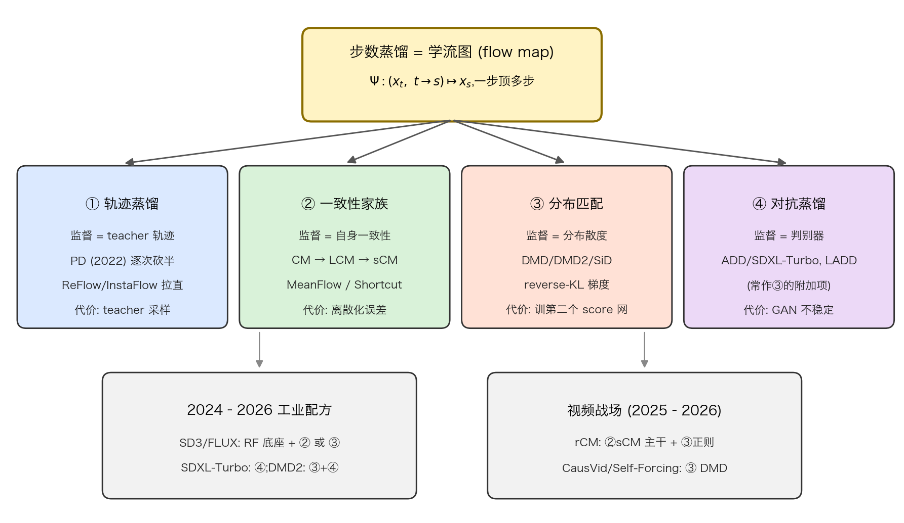
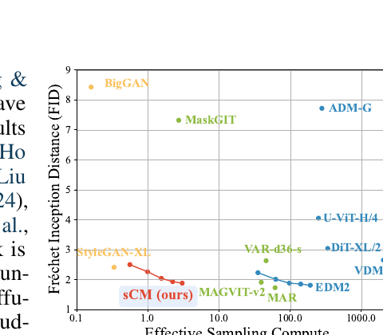
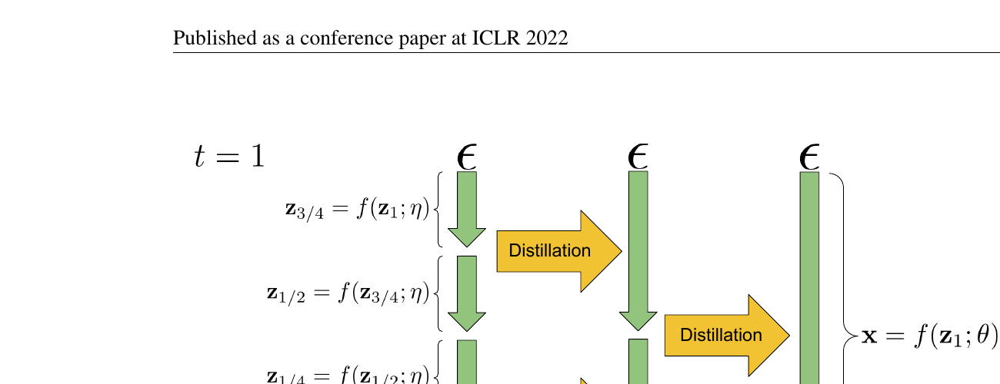
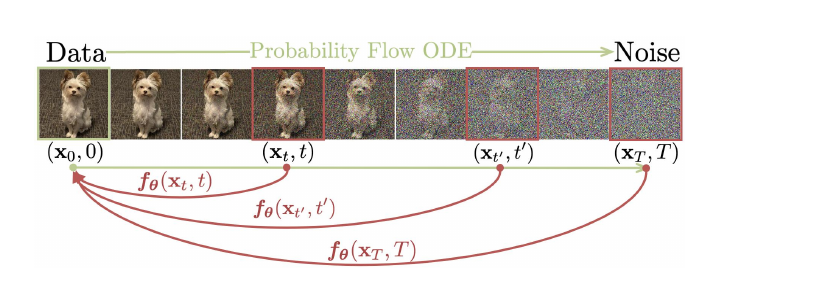
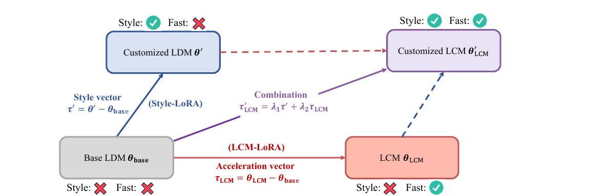
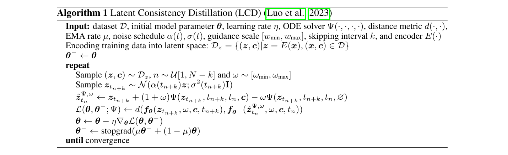
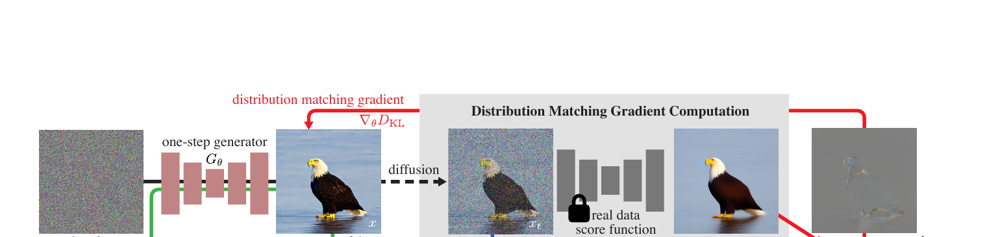
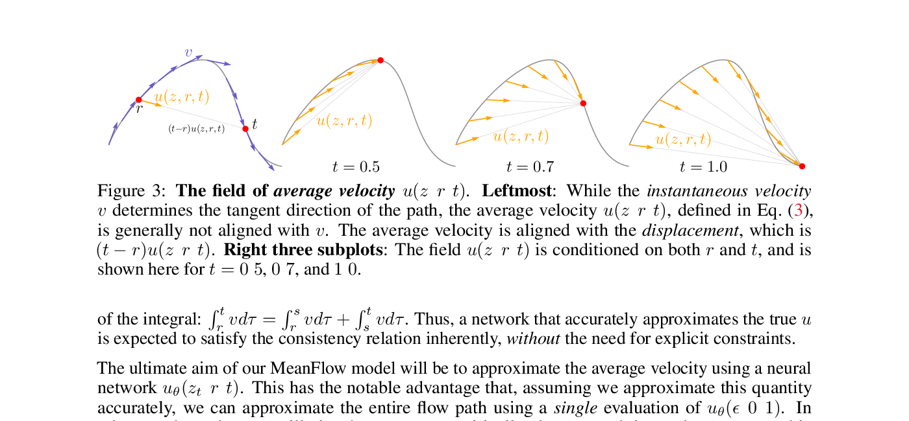
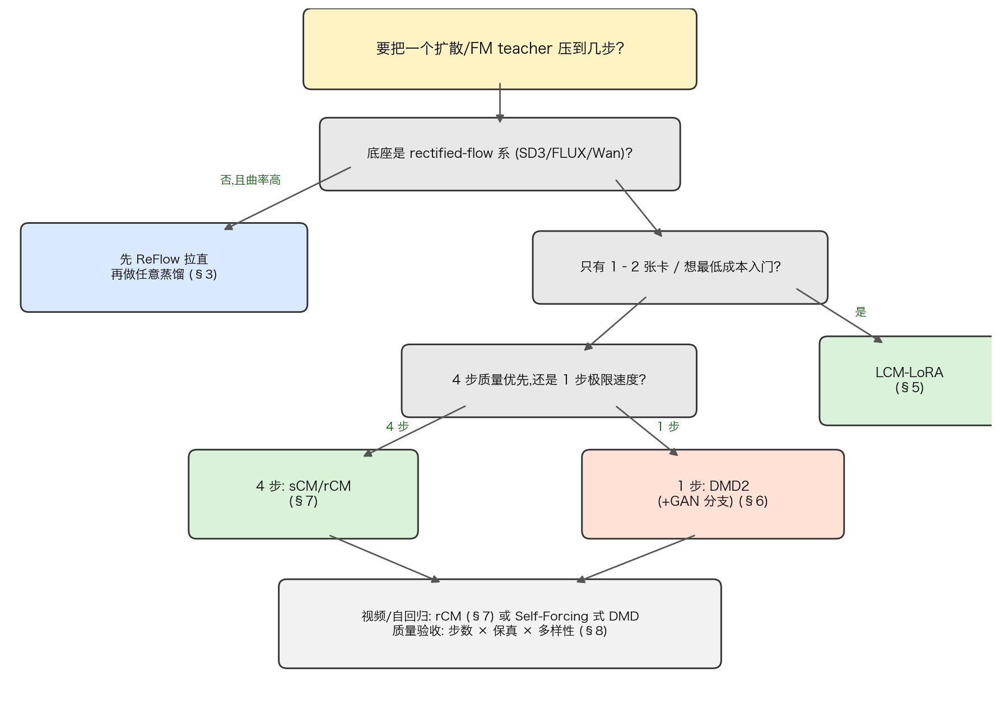

Diffusion / Flow Matching 步数蒸馏:四大家族与可实践指南
经典扩散模型出一张图要 25–1000 次网络前向,步数蒸馏(step distillation) 的目标是把它压到 1–4 步而几乎不掉质量——这是 SDXL-Turbo、LCM、SD3-Turbo、FLUX schnell 和一切"实时视频生成"背后的共同技术。本教程用 8 个螺旋结构章节(直觉 → 最小 demo → 正式化 → 真实代码 → 洞察)系统讲透四大家族:§1 立地基(蒸馏悖论 + flow map 视角);§2–§3 轨迹蒸馏(PD 逐次砍半、ReFlow 把路修直);§4–§5 一致性家族(CM 原理 → 今天就能跑的 LCM-LoRA 实践主线);§6 分布匹配(DMD→DMD2,以及"没放代码的 ADD"如何用 DMD2 的 GAN 分支替代);§7 2025–2026 前沿(sCM/TrigFlow 连续化、MeanFlow 平均速度、NVIDIA rCM 视频工业蒸馏);§8 选型决策树 + 成本模型 + 踩坑清单。
本教程的两条硬承诺:最新——覆盖到 2026 年 6 月仍在活跃提交的代码库(diffusers、NVlabs/rcm);可实践——每个主讲方法的 Step-4 代码都逐字引自开源训练脚本并经 diff 逐行验证,官方未开源的方法(PD、ADD)在文中明示并给出同范式的开源替代。
阅读提示:工程师赶时间可以直接跳 §5(LCM-LoRA,一条命令复现) 和 §8(决策树);想懂原理再回头读 §1–§4;§6–§7 是当前 SOTA 的两条主线。与本站教程OPD 在 Diffusion 上的应用互补:那边讲"蒸馏为对齐",这边讲"蒸馏为提速"。
1. 为什么 1000 步,又为什么能压到 1 步:蒸馏悖论与四大家族地图
1.1 直觉
想象从山脚去山顶酒店。出租车只能沿盘山公路开:每过一个弯就得停下来重新看路、打方向——看一次路,就对应扩散模型(diffusion model,一类先把图像加噪成纯噪声、再学着一步步去噪还原的生成模型)里的一次网络前向(把当前带噪图像喂给神经网络算一次输出)。公路有 1000 个弯,就要看 1000 次路——这就是经典扩散模型采样慢的原因,每看一次路叫一个采样步。而直升机不管公路多弯,直接从起点飞到终点:这就是步数蒸馏(step distillation)想训练出的"一步生成器"。

这件事真的做成了。下图来自 sCM 论文(OpenAI, 2024):横轴是采样花的算力,纵轴是图像质量(FID,越低越好)——2 步的 sCM 已经逼近需要上百步的最强教师模型。

这就引出 Sander Dieleman(2024)所说的蒸馏悖论(distillation paradox):扩散模型明明靠"多步"才生成得好,为什么又能被压到 1–4 步而几乎不掉质量?答案是:多步是数值积分的需要,不是信息的需要——路是弯的所以车要多次转向,但起点到终点的对应关系本身,一步就能记住。
1.2 最小 demo
用 20 行 numpy 验证"路弯 → 大步走不准"。我们手写一个弯曲的 2D 速度场(粒子一边向原点收缩一边旋转,真实轨迹是螺旋线,解析解已知),用最朴素的欧拉法分别走 100 步、5 步、1 步,看终点偏了多少:
# 教学示例 — 非生产代码
import numpy as np
# 手写的"弯曲"速度场 dx/dt = A @ x:粒子边收缩边旋转,轨迹是螺旋线
# (扩散采样轨迹也是这样的弯曲线,只是维度高得多)
A = np.array([[-1.0, -3.0],
[ 3.0, -1.0]])
def euler(x0, n_steps, T=1.0):
"""欧拉法:把 [0,T] 切成 n_steps 段,每段沿当前切线直走"""
x, dt = x0.copy(), T / n_steps
for _ in range(n_steps): # 每次循环 = 真实模型里的一次网络前向
x = x + dt * (A @ x) # 只看"此刻"的方向,直走 dt
return x
x0 = np.array([2.0, 0.0])
# 该线性 ODE 的解析终点:x(T) = e^{-T} * 旋转 3T 弧度 * x0
x_true = np.exp(-1.0) * 2.0 * np.array([np.cos(3.0), np.sin(3.0)])
for n in [100, 5, 1]:
err = np.linalg.norm(euler(x0, n) - x_true)
print(f"步数 N={n:>3d} 终点误差 = {err:.3f}")
# 输出约: N=100 误差 0.04 | N=5 误差 1.29 | N=1 误差 5.94
# 轨迹越弯,大步长的欧拉法偏得越离谱 —— 这就是"1000 步"的由来100 步误差 0.04,1 步误差 5.94——比终点本身的模长还大好几倍。注意:误差来自积分方法,不来自速度场本身。速度场是完全已知的,只是"沿切线直走"这个走法配不上弯曲的路。蒸馏要换掉的正是走法,而不是路。
1.3 正式化
把上面的直觉写成数学。训练好的扩散/流匹配模型给出一个速度场 \(v_\theta(x_t, t)\)(\(\theta\) 是网络参数),生成样本等价于求解概率流常微分方程(probability-flow ODE, PF-ODE):
—— 翻译:状态 $x_t$ 随时间 $t$ 的变化率,由网络在当前位置、当前时刻给出的速度决定;从纯噪声端 $x_T=\epsilon\sim\mathcal N(0,I)$ 沿这条方程积分到 $t=0$,得到的 $x_0$ 就是生成的数据样本。
这里 \(x_0\) 表示数据(图像),\(\epsilon\) 表示标准高斯噪声,\(T\) 是噪声端时刻——这套记号全教程通用。采样 = 数值积分:demo 里的欧拉法对应更新 \(x_{t-\Delta t} = x_t - \Delta t\, v_\theta(x_t, t)\),每一步都要算一次 \(v_\theta\),即一次网络前向。衡量采样成本的标准单位叫 NFE(Number of Function Evaluations,网络前向次数):DDPM 原版 NFE=1000,DDIM 约 50,而蒸馏的目标是 NFE=1~4。对十亿参数级的 UNet 或 DiT,每次前向都要几十毫秒到几百毫秒,NFE 几乎线性决定出图延迟和服务成本——这就是为什么工业界肯为"砍步数"投入整条训练流水线。
步数蒸馏的统一对象是流图(flow map):
—— 翻译:流图 $\Psi_\theta$ 是一个网络,输入轨迹上 $t$ 时刻的点 $x_t$ 和目标时刻 $s$,直接输出 ODE 真解在 $s$ 时刻的位置 $x_s$——把"沿途积分"这件事整个吞进一次前向里。
流图是良定义的:ODE 的解唯一,所以"从 \(x_t\) 出发在 \(s\) 时刻到哪"是一个确定的函数,只是 teacher 从没显式表示过它——它藏在 teacher 的多步采样过程里。老模型学的是切线 \(v\)(此刻往哪走),蒸馏学的是流图 \(\Psi\)(终点在哪)。切线必须小步走才准,流图天生一步到位——这就化解了蒸馏悖论:多步采样携带的全部信息,本来就能压缩进一个函数。剩下的问题只有一个:训练 \(\Psi_\theta\) 时,\(x_s\) 的真值标签从哪来?对这个问题的四种回答,就是四大家族:
- 轨迹蒸馏(§2–§3):让 teacher 多步积分算出 \(x_s\) 当回归目标,student 直接拟合(Progressive Distillation),或干脆把轨迹修直再学(Rectified Flow)。
- 一致性家族(§4–§5, §7):不要 teacher 的终点,改用自身约束——同一条轨迹上任意两点必须映到同一个终点(Consistency Models / LCM / sCM)。
- 分布匹配(§6):放弃逐条轨迹对齐,只要求 student 生成的分布与 teacher 一致,用两个 score 网络之差当梯度(DMD/DMD2)。
- 对抗蒸馏(§6 末):让判别器来判断 student 的输出像不像真图(ADD,即 SDXL-Turbo 路线)。
1.4 代码引用
"每步一次完整网络前向"不是教科书的抽象说法,而是生产代码里实打实的循环体。下面是 diffusers(33.8k★)中 DDIM 调度器单步更新的核心——采样时这段代码被循环调用 N 次,每次的 model_output 都来自一次完整的 UNet 前向:
sources/repos/huggingface-diffusers/src/diffusers/schedulers/scheduling_ddim.py:L453-L491 — DDIM 单步更新:每步都要一次完整 UNet 前向
# 3. compute predicted original sample from predicted noise also called
# "predicted x_0" of formula (12) from https://huggingface.co/papers/2010.02502
if self.config.prediction_type == "epsilon":
pred_original_sample = (sample - beta_prod_t ** (0.5) * model_output) / alpha_prod_t ** (0.5)
pred_epsilon = model_output
elif self.config.prediction_type == "sample":
pred_original_sample = model_output
pred_epsilon = (sample - alpha_prod_t ** (0.5) * pred_original_sample) / beta_prod_t ** (0.5)
elif self.config.prediction_type == "v_prediction":
pred_original_sample = (alpha_prod_t**0.5) * sample - (beta_prod_t**0.5) * model_output
pred_epsilon = (alpha_prod_t**0.5) * model_output + (beta_prod_t**0.5) * sample
else:
raise ValueError(
f"prediction_type given as {self.config.prediction_type} must be one of `epsilon`, `sample`, or"
" `v_prediction`"
)
# 4. Clip or threshold "predicted x_0"
if self.config.thresholding:
pred_original_sample = self._threshold_sample(pred_original_sample)
elif self.config.clip_sample:
pred_original_sample = pred_original_sample.clamp(
-self.config.clip_sample_range, self.config.clip_sample_range
)
# 5. compute variance: "sigma_t(η)" -> see formula (16)
# σ_t = sqrt((1 − α_t−1)/(1 − α_t)) * sqrt(1 − α_t/α_t−1)
variance = self._get_variance(timestep, prev_timestep)
std_dev_t = eta * variance ** (0.5)
if use_clipped_model_output:
# the pred_epsilon is always re-derived from the clipped x_0 in Glide
pred_epsilon = (sample - alpha_prod_t ** (0.5) * pred_original_sample) / beta_prod_t ** (0.5)
# 6. compute "direction pointing to x_t" of formula (12) from https://huggingface.co/papers/2010.02502
pred_sample_direction = (1 - alpha_prod_t_prev - std_dev_t**2) ** (0.5) * pred_epsilon
# 7. compute x_t without "random noise" of formula (12) from https://huggingface.co/papers/2010.02502
prev_sample = alpha_prod_t_prev ** (0.5) * pred_original_sample + pred_sample_direction
对照 §1.3 的积分一步:pred_original_sample 是网络从当前噪声水平猜出的终点 \(x_0\) 估计,pred_epsilon 是对应的噪声分量估计——两者合起来等价于在 \(x_t\) 处读出一次切线信息;prev_sample 则是沿这条切线走一小步得到的 \(x_{t-\Delta t}\),正是欧拉式更新的 DDIM 版本。注意开头按 prediction_type 分的三个分支:网络可以学着输出噪声(\(\epsilon\))、数据(sample)或两者的混合(v_prediction),三种参数化在数学上可互相换算,但少步场景下数值性质差异巨大——§2 会展示 v-参数化为什么是少步蒸馏的标配。整段代码再精巧,也只是"一步";外层循环跑 N 次,就是 N 次 UNet 前向、N 倍延迟(若再算上 classifier-free guidance,每步还要翻倍)——慢的根源不在这个文件里的任何一行,而在"必须循环 N 次"这个事实本身。蒸馏的目标,就是把这个循环干掉。
1.5 洞察
- 高阶求解器(DPM-Solver、UniPC 等)是"更聪明的看路方式",能把 NFE 从 1000 压到 ~10,但轨迹曲率是硬墙:再往下走,任何只依赖局部切线的方法都会像 demo 里 1 步欧拉那样崩掉。进入 1–4 步区间,必须换成学流图的蒸馏。
- "最新"与"可跑"是两个独立的维度:论文里最惊艳的方法未必放出训练代码(ADD 至今没有)。本教程的每个主讲方法都配有 2025–2026 仍活跃的开源训练代码,行号可查、命令可抄。
- 四大家族不是四选一的宗派,而是监督信号的四种来源,前沿工作(如 §7 的 rCM)已经在混合使用。怎么按你的底座、数据和算力选,§8 给出一棵可执行的决策树。
2. 轨迹蒸馏:Progressive Distillation,逐次砍半的开山之作
2.1 直觉
想象一场接力赛:原来由两名选手各跑一棒,现在换成一名新选手独自跑完两棒的全程,并且要求他冲线的位置与原来分毫不差。只要这名新选手训练到位,比赛人数就砍掉了一半——而且这件事可以反复做:4 棒并 2 棒,2 棒并 1 棒。Progressive Distillation(下称 PD,Salimans & Ho, ICLR 2022)就是把这个思路用在扩散采样上:让一个学生网络(student)用一步,精确命中老师网络(teacher)用两步确定性采样到达的位置;学生练成后自己变成新的 teacher,再蒸馏下一轮。每轮采样步数砍半,几轮之后,上千步的 teacher 就被压成了 4 步甚至 1 步的 student。

2.2 最小 demo
用一个解析可解的二维线性 ODE 当"弯曲轨迹"(类似 §1 的弯曲场):teacher 走两小步欧拉,student 用最小二乘闭式解学一个"一步更新",看它能不能精确命中 teacher 两步的终点。
# 教学示例 — 非生产代码:玩具版"两步并一步"轨迹蒸馏
import numpy as np
rng = np.random.default_rng(0)
A = np.array([[-1.0, -3.0], [3.0, -1.0]]) # 螺旋收缩场 dx/dt = A x,轨迹是弯的
h = 0.5 # teacher 的单步步长
def euler(x, h): # teacher 的一步显式欧拉更新
return x + h * (x @ A.T)
X = rng.normal(size=(1000, 2)) # 1000 个起点 ~ N(0, I)
Y = euler(euler(X, h), h) # teacher 两步终点 = 蒸馏目标
# student 假设: 一步更新 x + 2h * (x @ W.T),用最小二乘直接解出 W
W, *_ = np.linalg.lstsq(2 * h * X, Y - X, rcond=None)
naive = euler(X, 2 * h) # 不蒸馏, 直接迈一大步
stu = X + 2 * h * (X @ W) # 蒸馏后的一步 student
print("朴素一大步误差 :", np.abs(naive - Y).mean()) # ~0.56, 弯道上大步必偏
print("蒸馏一步误差 :", np.abs(stu - Y).mean()) # ~1e-15, 精确命中
朴素地把步长翻倍,误差被轨迹曲率放大;而蒸馏出的一步更新直接回归"两步复合"这个映射本身,误差归零。这个玩具里 teacher 两步的复合恰好仍是线性映射,落在 student 的假设类内,所以能精确解出;真实扩散里"两步 UNet 复合"不在"单个 UNet"的函数类内,只能近似——这正是 PD 误差的来源,也是 2.5 节要讨论的累积问题。
2.3 正式化
先固定记号(与 §1 一致):\(x_0\) 是干净数据,\(\epsilon\sim\mathcal{N}(0,I)\) 是噪声,\(t\in[0,T]\) 是时间,噪声调度满足 \(x_t=\alpha_t x_0+\sigma_t\epsilon\)(PD 采用 variance-preserving 调度,\(\alpha_t^2+\sigma_t^2=1\))。网络输出记为对干净数据的预测 \(\hat{x}_\theta(x_t)\)(即 \(\hat{x}_0\) 的估计)。DDIM 的确定性更新从 \(t\) 走到更早的时刻 \(s\lt t\):
—— 翻译:先用网络猜出干净图 $\hat{x}_\theta$,括号里是当前噪声残差;新状态 = 按 $s$ 时刻的配比,把"猜的干净图"和"等比例缩放的残差噪声"重新混合。
PD 的一轮蒸馏(论文 Algorithm 2):设 teacher \(\hat{x}_\eta\) 跑 \(N\) 步,单步跨度 \(\delta=T/N\)。训练时随机取数据加噪得 \(x_t\),从 \(x_t\) 出发让 teacher 连走两步 DDIM:\(t\to t'=t-\delta\to t''=t-2\delta\),得到终点 \(x_{t''}\)(两步都用上面的更新式,网络换成冻结的 \(\hat{x}_\eta\))。student 要用一步 DDIM 从 \(x_t\) 直达 \(x_{t''}\):把更新式写成 \(t\to t''\) 的一步、网络预测记为未知数 \(\tilde{x}\),即 \(x_{t''}=\alpha_{t''}\tilde{x}+\frac{\sigma_{t''}}{\sigma_t}(x_t-\alpha_t\tilde{x})\),这是关于 \(\tilde{x}\) 的线性方程,直接反解:
—— 翻译:给定起点 $x_t$ 和 teacher 两步的终点 $x_{t''}$,这是唯一能让 student 一步 DDIM 恰好命中该终点的"等效干净图预测";它是闭式算出来的,不需要梯度穿过 teacher。
注意这个 target 的两个好处:其一,它只依赖 teacher 的两次前向,可以在训练循环里现算(甚至离线预生成),teacher 全程冻结、无反传开销;其二,若 student 把 \(\tilde{x}\) 学到零误差,一步终点与 teacher 两步终点严格相等,而不是某种平均意义上的接近——这就是接力赛"冲线分毫不差"的数学表述。于是 PD 的损失就是普通的去噪回归 \(L_\theta=w(\lambda_t)\,\lVert\tilde{x}-\hat{x}_\theta(x_t)\rVert_2^2\)(\(w\) 是随信噪比 \(\lambda_t=\log[\alpha_t^2/\sigma_t^2]\) 变化的权重)——模型结构、训练循环都不变,只是把目标从"真实 \(x_0\)"换成了"teacher 两步的等效预测 \(\tilde{x}\)"。student 收敛后令 \(\eta\leftarrow\theta\)、\(N\leftarrow N/2\),进入下一轮。
剩下一个关键工程问题:网络该预测什么?若沿用 DDPM 的 \(\epsilon\)-参数化,干净图由 \(\hat{x}_0=(x_t-\sigma_t\hat{\epsilon})/\alpha_t\) 还原。当 \(t\to T\) 时 \(\alpha_t\to 0\),\(\hat{\epsilon}\) 的微小误差被 \(1/\alpha_t\) 无限放大;更糟的是 1 步生成时输入就是纯噪声 \(x_T\approx\epsilon\),"预测噪声"退化为复读输入,模型输出里根本不携带关于 \(x_0\) 的信息,整个生成只能依赖那个被放大的还原式。多步采样时各步误差能互相修正,少步时没有这个缓冲,\(\epsilon\)-参数化直接失稳。PD 因此提出 v-参数化:
—— 翻译:$v$ 是噪声与数据的一个旋转组合;把 $x_t=\alpha_t x_0+\sigma_t\epsilon$ 与它联立、利用 $\alpha_t^2+\sigma_t^2=1$ 消去 $\epsilon$,干净图就能用不含除法的式子还原——任何 $t$ 下系数都有界,少步也不爆。
推导只有一步:\(\alpha_t x_t-\sigma_t v_t=\alpha_t(\alpha_t x_0+\sigma_t\epsilon)-\sigma_t(\alpha_t\epsilon-\sigma_t x_0)=(\alpha_t^2+\sigma_t^2)x_0=x_0\),交叉项 \(\alpha_t\sigma_t\epsilon\) 恰好抵消。
2.4 代码引用
提前披露:PD 的官方实现(google-research/diffusion_distillation)仓库已 404,无法逐行佐证。这里改用 RectifiedFlow 官方仓库的蒸馏分支作证——它做的正是同一范式的轨迹回归:把 teacher 从噪声 \(z_0\) 积分到的终点当作回归目标,训练 student 一步(配置 k=1)直达。开山方法的代码失传、而它的思想原封不动地活在后续工作的 distill 分支里,这本身就是轨迹蒸馏地位的注脚。
sources/repos/gnobitab-RectifiedFlow/ImageGeneration/losses.py:L110-L124 — 轨迹回归式蒸馏 loss(k=1 一步蒸馏分支)
if sde.reflow_flag:
### we found LPIPS loss is the best for distillation when k=1; but good to have a try
if sde.reflow_loss=='l2':
### train new rectified flow with reflow or distillation with L2 loss
losses = torch.square(score - target)
elif sde.reflow_loss=='lpips':
assert sde.reflow_t_schedule=='t0'
losses = sde.lpips_model(z0 + score, batch)
elif sde.reflow_loss=='lpips+l2':
assert sde.reflow_t_schedule=='t0'
lpips_losses = sde.lpips_model(z0 + score, batch).view(batch.shape[0], 1)
l2_losses = torch.square(score - target).view(batch.shape[0], -1).mean(dim=1, keepdim=True)
losses = lpips_losses + l2_losses
else:
assert False, 'Not implemented'
sources/repos/gnobitab-RectifiedFlow/ImageGeneration/configs/rectified_flow/cifar10_rf_gaussian_reflow_distill_k=1.py:L39-L45 — 一步蒸馏配置(k=1)
# reflow
config.reflow = reflow = ml_collections.ConfigDict()
reflow.reflow_type = 'train_reflow' # NOTE: generate_data_from_z0, train_reflow
reflow.reflow_t_schedule = 't0' # NOTE; t0, t1, uniform, or an integer k > 1
reflow.reflow_loss = 'lpips' # NOTE: l2, lpips, lpips+l2
reflow.last_flow_ckpt = 'ckpt_path' # NOTE: the rectified flow model to fine-tune
reflow.data_root = 'data_path' # NOTE: the folder to load the generated data
对照 2.3 的公式:l2 分支的 torch.square(score - target) 就是回归损失 \(\lVert\tilde{x}-\hat{x}_\theta\rVert^2\) 的直接对应——target 是由 teacher 轨迹预先算好的回归目标,梯度同样不穿过 teacher。lpips 分支则把 L2 换成感知距离,作者在注释里直说"k=1 蒸馏时 LPIPS 最好",呼应了 PD 论文 §4.1 的观察:一步生成无法做到像素级精确,感知度量比逐像素 L2 更宽容也更有效。配置文件里 reflow_t_schedule='t0' 表示只在轨迹起点(纯噪声端)训练、k=1 即"一步直接回归 teacher 终点"——正是 PD 砍到最后一轮时的形态,只是 RectifiedFlow 一次到位而非逐轮砍半(为何能一次到位,见 §3 的 reflow)。
2.5 洞察
- 串行多轮是成本,也是误差放大器。 1024 步砍到 1 步要 10 轮蒸馏,每轮都要训到收敛;且第 \(k\) 轮的 teacher 本身已带前 \(k-1\) 轮的近似误差,student 只能照单全收。后续每个家族——reflow 的修直(§3)、一致性模型的自蒸馏(§4)、分布匹配(§6)——本质上都在绕开这条"逐轮累积"的串行链。
- v-参数化是 PD 留给整个领域的遗产。 今天 LCM、SDXL-Turbo 等少步模型的底模大多采用 v-prediction 或 flow 参数化,根源就是 PD 对"\(\epsilon\)-预测在 \(\alpha_t\to 0\) 处失稳"的这页分析:少步生成的第一道门槛不是蒸馏算法,而是参数化。
- "结构不变、只换监督目标"成为范式。 PD 证明了不需要为少步生成设计新架构——同一个 UNet,把回归目标从 \(x_0\) 换成 \(\tilde{x}\) 就够了。后面各家族换的也只是这个 target 的构造方式:teacher 轨迹点、自身一致性输出、score 差,皆是同一模板的不同填法(§8 会把它们填进同一张表)。
3. 把路修直:Rectified Flow / ReFlow → InstaFlow → SD3/FLUX 底座
3.1 直觉
§2 的 Progressive Distillation 教 student"在弯路上跳着开":teacher 两步并 student 一步,路还是那条弯路。这一节换一个更釜底抽薪的思路——不学跳步,把路本身修直。
类比盘山公路改隧道:第一次,你只能老老实实沿盘山路把车开到山顶(teacher 用几十上百步 ODE 采样跑完全程),但你记下了起点和终点这对坐标;第二次修路时,逢山开洞,直接沿起终点连线打一条隧道。路修得越直,司机开大步长(大油门、少看路)也不容易冲出路面。这正是 Rectified Flow(RF)的 reflow 操作:用 teacher 跑出来的(噪声, 样本)配对重训一个新的流,轨迹一轮比一轮直。
为什么"轨迹直了,步数就能少"?回忆 §1:采样就是对 PF-ODE 做数值积分,每步误差来自"用切线近似曲线"。如果轨迹是一条严格的直线,切线和曲线完全重合——欧拉法在直线上的离散化误差恰好为零,一步就能精确积分到终点;轨迹"接近直线",大步长的误差也只是小量。曲率才是步数的真正敌人;把曲率修没了,NFE 自然降到 1 附近。和 §2 对比:PD 是"路不动、教车跳",reflow 是"车不动、把路修直"——前者改监督目标,后者改数据耦合。
3.2 最小 demo
用 2D 玩具复现一次 reflow:左边一团高斯当噪声,右边两团高斯当数据。第一轮随机配对训速度场(用最小二乘拟合线性特征,够用),第二轮用第一轮"采样出的配对"重训,对比两轮"1 步欧拉 vs 100 步欧拉"的终点误差:
# 教学示例 — 非生产代码:2D 玩具 reflow(t=0 噪声 → t=1 数据)
import numpy as np
rng = np.random.default_rng(0)
N = 2000
x0 = rng.normal([-4.0, 0.0], 0.3, (N, 2)) # 噪声:左边一团
x1 = np.where(rng.random((N, 1)) < 0.5, [4.0, 3.0], [4.0, -3.0]) \
+ rng.normal(0, 0.3, (N, 2)) # 数据:右边两团
def fit_v(x0, x1, T=8): # 拟合 v(x,t) ≈ W @ [x, t, 1]
ts = rng.random((T * len(x0), 1))
X0, X1 = np.tile(x0, (T, 1)), np.tile(x1, (T, 1))
xt = ts * X1 + (1 - ts) * X0 # 线性插值点
feats = np.hstack([xt, ts, np.ones_like(ts)])
W, *_ = np.linalg.lstsq(feats, X1 - X0, rcond=None) # 回归目标 x1 - x0
return lambda x, t: np.hstack(
[x, np.full((len(x), 1), t), np.ones((len(x), 1))]) @ W
def euler(v, x, steps):
for i in range(steps):
x = x + v(x, i / steps) / steps
return x
v1 = fit_v(x0, x1) # 第 1 轮:随机(独立)配对
z1 = euler(v1, x0, 100) # teacher 多步采样 → 新配对 (x0, z1)
v2 = fit_v(x0, z1) # 第 2 轮:reflow 重训
for v, name in [(v1, "FM"), (v2, "ReFlow")]:
err = np.abs(euler(v, x0, 1) - euler(v, x0, 100)).mean()
print(name, "1 步 vs 100 步终点误差:", round(float(err), 3))
跑出来第二轮的误差显著小于第一轮:第一轮里"左团 → 上团"和"左团 → 下团"的插值线大量交叉,速度场在交叉区只能输出平均方向,轨迹被迫先直行再分叉、整体弯曲;第二轮的配对来自 ODE 解,确定性 ODE 的轨迹不会交叉,等于把"该去上团的噪声"和"该去下团的噪声"提前分好了组,重训出的场近乎直线,1 步和 100 步几乎一样。整个 demo 没有任何新损失函数——换的只是数据配对方式,这正是 reflow 的全部。
3.3 正式化
线性插值 flow matching 目标。 约定 \(t=0\) 是噪声、\(t=1\) 是数据(与本节引用的 RectifiedFlow 代码方向一致;§7 的 MeanFlow 论文采用相反约定,届时另行说明)。设 \(x_0\sim\mathcal N(0,I)\) 为噪声样本,\(x_1\sim p_{\text{data}}\) 为数据样本,\(t\in[0,1]\),定义插值点与训练目标:
—— 翻译:在噪声 $x_0$ 和数据 $x_1$ 的连线上随机取一点 $x_t$,让网络 $v_\theta$ 在这一点预测"这条连线的方向 $x_1-x_0$";损失是预测速度与真实直线速度的均方差。
最优解是条件期望 \(v^\*(x,t)=\mathbb E[x_1-x_0\mid x_t=x]\):多条插值线在 \(x\) 处交叉时,\(v^\*\) 是它们方向的平均——这正是轨迹弯曲的根源。
ReFlow 算子。 训好 \(v_\theta\) 后,用它的 ODE 把每个噪声积分到终点,得到新配对:
—— 翻译:从噪声 $z_0$ 出发,沿学到的速度场把 ODE 从 $t=0$ 积到 $t=1$,落点记为 $z_1$;这对 $(z_0,z_1)$ 替换原来的随机配对,代回上面的 FM 损失重训——这一整套替换-重训操作就是 reflow。
直化度量与单调性。 定义流 \(Z=\{z_t\}\) 的弯曲度(straightness 的反面):
—— 翻译:把每一时刻的瞬时速度 $\dot z_t$ 与"起终点平均速度 $z_1-z_0$"作差、平方后对全程取平均;$S(Z)=0$ 当且仅当每条轨迹都是匀速直线。
RF 论文证明:每做一次 reflow,新配对的凸传输成本不增——对任意凸函数 \(c\) 有 \(\mathbb E[c(z_1-z_0)]\le\mathbb E[c(x_1-x_0)]\)——且反复 reflow 使 \(S(Z^k)\) 趋向 0(完整证明见 RF 论文 Theorem 3.5 及其后续定理,核心是两次 Jensen 不等式;本文只给直觉 sketch:reflow 把交叉的连线"重新接线"成不交叉的连线,绕路被重排消除,总路程只会变短、路线只会变直)。
k 步并 1 步的收尾蒸馏。 轨迹够直之后,再套用 §2 的回归式把残余的 k 步并成 1 步:取 \(\hat T(z_0)=z_0+v_\theta(z_0,0)\),最小化 \(\mathbb E\,\|(z_1-z_0)-v_\theta(z_0,0)\|^2\)(即 FM 损失固定 \(t=0\) 的特例)。注意蒸馏与 reflow 的分工:蒸馏忠实拟合当前配对,reflow 产生一个更直的新配对——所以先 reflow 修路、最后一步才蒸馏。InstaFlow 就是把这套"reflow + distill"原封不动搬到 Stable Diffusion 文生图上,得到第一个一步出图的 SD。
3.4 代码引用
RectifiedFlow 官方实现里,FM 训练、reflow 重训、k=1 蒸馏共用同一个 loss 函数,只切分支:
sources/repos/gnobitab-RectifiedFlow/ImageGeneration/losses.py:L100-L126 — rectified flow 速度回归 loss(线性插值目标;reflow/distill 分支)
### standard rectified flow loss
t = torch.rand(batch.shape[0], device=batch.device) * (sde.T - eps) + eps
t_expand = t.view(-1, 1, 1, 1).repeat(1, batch.shape[1], batch.shape[2], batch.shape[3])
perturbed_data = t_expand * batch + (1.-t_expand) * z0
target = batch - z0
model_fn = mutils.get_model_fn(model, train=train)
score = model_fn(perturbed_data, t*999) ### Copy from models/utils.py
if sde.reflow_flag:
### we found LPIPS loss is the best for distillation when k=1; but good to have a try
if sde.reflow_loss=='l2':
### train new rectified flow with reflow or distillation with L2 loss
losses = torch.square(score - target)
elif sde.reflow_loss=='lpips':
assert sde.reflow_t_schedule=='t0'
losses = sde.lpips_model(z0 + score, batch)
elif sde.reflow_loss=='lpips+l2':
assert sde.reflow_t_schedule=='t0'
lpips_losses = sde.lpips_model(z0 + score, batch).view(batch.shape[0], 1)
l2_losses = torch.square(score - target).view(batch.shape[0], -1).mean(dim=1, keepdim=True)
losses = lpips_losses + l2_losses
else:
assert False, 'Not implemented'
else:
losses = torch.square(score - target)
reflow 需要的 \((z_0,z_1)\) 配对由 teacher 离线合成,逻辑就是"采噪声 → 积分 ODE → 存盘":
sources/repos/gnobitab-RectifiedFlow/ImageGeneration/run_lib_reflow.py:L148-L169 — reflow 配对数据生成(teacher 合成 (z0,z1) 对)
for data_step in range(config.reflow.total_number_of_samples // config.training.batch_size):
print(data_step)
z0 = sde.get_z0(torch.zeros((config.training.batch_size, 3, config.data.image_size, config.data.image_size), device=config.device), train=False).to(config.device)
batch = sde.ode(z0, score_model)
print(batch.shape, batch.max(), batch.min(), z0.mean(), z0.std())
z0_cllt.append(z0.cpu())
data_cllt.append(batch.cpu())
z0_cllt = torch.cat(z0_cllt)
data_cllt = torch.cat(data_cllt)
print(data_cllt.shape, z0_cllt.shape)
print(z0_cllt.mean(), z0_cllt.std())
if not os.path.exists(os.path.join(data_root, str(config.seed))):
os.mkdir(os.path.join(data_root, str(config.seed)))
np.save(os.path.join(data_root, str(config.seed), 'z1.npy'), data_cllt.numpy())
np.save(os.path.join(data_root, str(config.seed), 'z0.npy'), z0_cllt.numpy())
import sys
print('Successfully generated z1 from random z0 with random seed:', config.seed, 'Total number of pairs:', (data_step+1)*config.training.batch_size)
sys.exit(0)
对照公式逐行读:第一段里 perturbed_data = t_expand * batch + (1.-t_expand) * z0 就是插值式 \(x_t=t\,x_1+(1-t)\,x_0\)(batch 是数据 \(x_1\),z0 是噪声 \(x_0\),可见代码确实采用 \(t=1\) 在数据端的方向约定);target = batch - z0 就是回归目标 \(x_1-x_0\);变量名 score 沿用 score-SDE 代码框架的旧名,实际输出的是速度 \(v_\theta\)。第二段里 sde.ode(z0, score_model) 就是 ReFlow 算子中的积分 \(\int_0^1 v_\theta\,dt\),存下的 z0.npy/z1.npy 即新配对 \((z_0,z_1)\)。第一段的 LPIPS 分支(强制 reflow_t_schedule='t0',即只在 \(t=0\) 训练)对应 3.3 的 k=1 收尾蒸馏——作者注释直说:k=1 蒸馏用 LPIPS 感知损失效果最好,这与 §2 见过的"轨迹回归 + 感知度量"组合一脉相承。
3.5 洞察
reflow 的真实代价是 teacher 算力。 每个配对都要 teacher 完整跑一遍 ODE(几十到上百次 NFE),合成百万级配对就是亿级网络前向——reflow 本质是"用离线算力换轨迹直化"。InstaFlow 报告其全流程(配对合成 + reflow + 蒸馏)约 200 A100 GPU 天的量级,虽比从头训 SD 便宜两个数量级,但对个人玩家仍不是免费午餐。这也是 §4 一致性模型的卖点:把"teacher 采样数据集"的成本归零。
"先修路再提速"成了工业默认。 SD3、FLUX、Wan 等 2024 年后的主流底座直接用 RF/线性插值目标从头训练——不是因为它们要一步出图,而是天生较直的底座让后续一切蒸馏都更容易:LCM(§5)、DMD(§6)、sCM/rCM(§7)在 RF 底座上普遍比在 DDPM 底座上收敛更快、少步质量更高。修路是地基工程,提速是后装涡轮,两者解耦。
直 ≠ 完美。 一次 reflow 后通常 2–4 步可用,但 1 步仍差一口气;而 RF 论文自己也警告不要做太多轮 reflow——每轮都在拟合上一轮的估计误差,误差会累积。所以现实配方是:reflow 一两次修到"基本直",剩下的最后一公里交给蒸馏补刀——LPIPS 回归(本节)、一致性(§4/§5)、分布匹配(§6)或平均速度(§7),都是不同口味的补刀方式。
4. 一致性家族 I:Consistency Models —— 同一条轨迹只有一个终点
4.1 直觉
想象一条河:在河道的任何位置放下一只纸船,它最终都会漂到同一个出海口。河道(PF-ODE 轨迹)上的每一个点,都唯一对应着一个终点。Consistency Models(下称 CM,Song et al., ICML 2023)抓住的就是这条性质:训练一个网络 \(f\),让它在轨迹上任何一点的输出都等于这条轨迹的终点(那张干净图)。这个性质叫一致性(consistency)——不管你从河道哪里捞起纸船问"它要去哪",答案必须是同一个出海口。一旦学成,一步生成是免费的:采一个纯噪声 \(x_T\),调用一次 \(f\),出来的就是终点干净图——根本不存在"沿轨迹走"这个过程。

和 §2 的 PD 对比一句:PD 学"跳一步"(student 一步追 teacher 两步,且每个训练样本都要 teacher 在线跑两次前向),CM 学"直接跳到底"——而构造监督信号只需要 teacher 在相邻两个时刻之间走一小步,把"任意点到终点"的长程对应留给一致性条件自己去传播。监督更便宜,跳得却更远,这就是 CM 的杠杆。
4.2 最小 demo
用 1D 玩具把这个杠杆跑出来:数据只有 \(\pm 2\) 两个点,去噪器有解析解,teacher 沿 PF-ODE 走一小步造出相邻点对 \((x_{t}, x_{t_2})\);student 在 \(x_t\) 的输出,去追 EMA 副本(target 网络)在 \(x_{t_2}\) 的输出。训练后验证:同一条轨迹上任何噪声水平处,student 都输出同一个终点。
# 教学示例 — 非生产代码:1D 玩具一致性蒸馏(数据 = ±2 两个点)
import numpy as np
rng = np.random.default_rng(0)
eps, smax, sdata, N = 0.02, 5.0, 2.0, 60
grid = (smax**(1/7) + np.arange(N)/(N-1)*(eps**(1/7)-smax**(1/7)))**7 # Karras 格点, 噪声由大到小
def denoise(x, s): # 解析 teacher:E[数据 | x_s]
w = np.exp(-(x-2)**2/(2*s*s)); v = np.exp(-(x+2)**2/(2*s*s))
return (2*w - 2*v) / (w + v)
def cskip(s): return sdata**2 / ((s-eps)**2 + sdata**2) # 边界参数化, 见 4.3
def cout(s): return sdata*(s-eps) / np.sqrt(sdata**2 + s**2)
def phi(x, s): return np.stack([x, np.tanh(x), np.tanh(x/s), np.ones_like(x)])
def f(w, x, s): return cskip(s)*x + cout(s)*(w @ phi(x, s)) # "网络" = 线性小模型
w = np.zeros(4); w_ema = w.copy()
for it in range(30000):
i = rng.integers(0, N-1, 256)
s1, s2 = grid[i], grid[i+1] # 相邻格点, s2 比 s1 更干净
x1 = rng.choice([-2., 2.], 256) + s1*rng.standard_normal(256)
x2 = x1 + (s2-s1)*(x1 - denoise(x1, s1))/s1 # teacher 一步欧拉造相邻点
g = (f(w, x1, s1) - f(w_ema, x2, s2)) * cout(s1) # 残差 × ∂f/∂w 的解析梯度
w -= 0.02 * (g * phi(x1, s1)).mean(1)
w_ema = 0.99*w_ema + 0.01*w # EMA target 网络
xs, x = [3.0], 3.0 # 从噪声端 x=3 沿 PF-ODE 积出一条轨迹
for k in range(N-1):
x += (grid[k+1]-grid[k])*(x - denoise(x, grid[k]))/grid[k]
xs.append(x)
for k in [0, 20, 40, 59]: # 轨迹上 4 个不同噪声水平处问 f
print(f"σ={grid[k]:5.2f} f={f(w, np.array([xs[k]]), grid[k])[0]:+.3f}")
# 输出: σ=5.00 f=+1.963 | σ=1.19 f=+2.191 | σ=0.20 f=+2.110 | σ=0.02 f=+1.995
# 这条轨迹的真终点 ≈ +1.995 —— 任意点都映到同一个出海口三十行里有全部要素:Karras 格点、解析 teacher 走一步造相邻对、EMA target 出标签、边界参数化兜底。注意训练中没有任何样本见过"从 \(\sigma=5\) 直达终点"的标签——每对样本只隔一个格点。长程能力是递推出来的:最干净一端被边界条件钉死(cskip/cout 使 \(f(x,\varepsilon)=x\)),倒数第二个格点向它看齐,倒数第三个向倒数第二个看齐……一致性像多米诺一样从数据端传到噪声端。
4.3 正式化
本节时间方向回到 diffusion 习惯:\(t\) 越大噪声越多(与 §3 的 FM 约定相反);并且采用 EDM 框架,时间就是噪声标准差,\(t\equiv\sigma\)。设 PF-ODE 轨迹 \(\{x_t\}_{t\in[\varepsilon,T]}\),\(\varepsilon\) 是接近 0 的最小时刻(数值上不取 0 以避免奇异)。一致性函数定义为满足:
—— 翻译:左式是自洽条件——同一条轨迹上任取两点,$f$ 的输出必须相同;右式是边界条件——在最干净的 $\varepsilon$ 时刻,$f$ 就是恒等映射。两者合起来唯一确定:$f$ 把轨迹上每个点都映到该轨迹在 $\varepsilon$ 处的端点。
边界条件不能靠损失函数"软"逼近——它要是不严格成立,自洽条件就可以被"全体输出同一常数"这种坍缩解满足。CM 把它硬编码进参数化:
—— 翻译:网络的实际输出 $F_\theta$ 不直接当结果用,而是与输入 $x$ 按系数混合;只要系数满足 $c_{\mathrm{skip}}(\varepsilon)=1$、$c_{\mathrm{out}}(\varepsilon)=0$,则 $t=\varepsilon$ 处 $f_\theta(x,\varepsilon)=x$ 自动成立,无论 $F_\theta$ 输出什么。
CM 沿用 EDM 的系数并平移 \(\varepsilon\)(\(\sigma_{\mathrm{data}}\) 是数据标准差,图像取 0.5):
—— 翻译:代入 $t=\varepsilon$ 验证:$c_{\mathrm{skip}}(\varepsilon)=\sigma_{\mathrm{data}}^2/(0+\sigma_{\mathrm{data}}^2)=1$,$c_{\mathrm{out}}(\varepsilon)=0/\sqrt{\cdot}=0$,边界条件严格成立;$t$ 远大于 $\varepsilon$ 时 $c_{\mathrm{skip}}\to 0$,输出主要来自网络——噪声越大越依赖 $F_\theta$,噪声越小越保留输入。
训练用一致性蒸馏(Consistency Distillation, CD)。把 \([\varepsilon, T]\) 切成 \(N\) 个离散格点 \(\varepsilon = t_1 \lt t_2 \lt \cdots \lt t_N = T\)(Karras \(\rho\) 调度,\(\rho=7\),在小噪声端加密)。每次迭代:随机抽一个格点 \(n\),取数据 \(x_0\) 加噪得 \(x_{t_{n+1}} = x_0 + t_{n+1}\,\epsilon\)(EDM 的加噪就是直接加 \(t\) 倍标准差的高斯噪声,不缩放数据),让 teacher 沿 PF-ODE \(\frac{dx}{dt} = \frac{x - D(x,t)}{t}\)(\(D\) 是 teacher 去噪器)从 \(t_{n+1}\) 走一步 Heun 到 \(\hat x_{t_n}\),然后拉近这相邻两点经 \(f\) 的像:
—— 翻译:student $f_\theta$ 在较噪点 $x_{t_{n+1}}$ 的输出,去回归 target 网络 $f_{\theta^-}$ 在较净点 $\hat x_{t_n}$ 的输出;$\theta^-$ 是 $\theta$ 的 EMA(指数滑动平均)副本、不回传梯度,$d$ 是距离(L2/LPIPS),$\lambda$ 是随噪声水平变化的权重。
若把 teacher 一步换成用真实 \(x_0\) 构造的无偏 score 估计(欧拉步里直接拿 \(x_0\) 当去噪器),就得到一致性训练(CT)——完全不需要预训练 teacher,从头训一个一步生成器;CM 论文证明 CT 是 CD 在 \(N\to\infty\) 意义下的无偏极限,这里按下不表(§7 的 sCM 会把它做大)。
代价藏在 \(N\) 里:CD 的理论保证是 student 与真一致性函数的误差为 \(O(\Delta t)\) 量级——格点越密单步离散化误差越小,但相邻两点的 \(f\) 值差也越小,监督信号越弱、训练越慢;\(N\) 太小则 Heun 一步本身偏了,student 学到的是歪的终点。\(N\)、EMA 衰减率、\(\lambda\) 调度全都要调,而且最优值随数据集和训练阶段漂移(论文实际用的是随训练步数增长的 \(N(k)\) 课程表)——这套离散超参的"地狱"正是 §7 sCM 连续化(\(N\to\infty\) 取极限消掉格点表)的直接动机。
4.4 代码引用
OpenAI 官方实现里,CD/CT 共用一个 loss 函数,核心 36 行:
sources/repos/openai-consistency_models/cm/karras_diffusion.py:L174-L209 — CM 一致性蒸馏 loss:相邻两点经 student/EMA-target 映射后拉近
indices = th.randint(
0, num_scales - 1, (x_start.shape[0],), device=x_start.device
)
t = self.sigma_max ** (1 / self.rho) + indices / (num_scales - 1) * (
self.sigma_min ** (1 / self.rho) - self.sigma_max ** (1 / self.rho)
)
t = t**self.rho
t2 = self.sigma_max ** (1 / self.rho) + (indices + 1) / (num_scales - 1) * (
self.sigma_min ** (1 / self.rho) - self.sigma_max ** (1 / self.rho)
)
t2 = t2**self.rho
x_t = x_start + noise * append_dims(t, dims)
dropout_state = th.get_rng_state()
distiller = denoise_fn(x_t, t)
if teacher_model is None:
x_t2 = euler_solver(x_t, t, t2, x_start).detach()
else:
x_t2 = heun_solver(x_t, t, t2, x_start).detach()
th.set_rng_state(dropout_state)
distiller_target = target_denoise_fn(x_t2, t2)
distiller_target = distiller_target.detach()
snrs = self.get_snr(t)
weights = get_weightings(self.weight_schedule, snrs, self.sigma_data)
if self.loss_norm == "l1":
diffs = th.abs(distiller - distiller_target)
loss = mean_flat(diffs) * weights
elif self.loss_norm == "l2":
diffs = (distiller - distiller_target) ** 2
loss = mean_flat(diffs) * weights
造相邻点的 heun_solver 就定义在同一文件上方:
sources/repos/openai-consistency_models/cm/karras_diffusion.py:L143-L160 — teacher 的一步 Heun ODE 解算(造出相邻点 x_t2)
def heun_solver(samples, t, next_t, x0):
x = samples
if teacher_model is None:
denoiser = x0
else:
denoiser = teacher_denoise_fn(x, t)
d = (x - denoiser) / append_dims(t, dims)
samples = x + d * append_dims(next_t - t, dims)
if teacher_model is None:
denoiser = x0
else:
denoiser = teacher_denoise_fn(samples, next_t)
next_d = (samples - denoiser) / append_dims(next_t, dims)
samples = x + (d + next_d) * append_dims((next_t - t) / 2, dims)
return samples
逐项对照 4.3 的公式:开头的 indices/t/t2 就是离散格点对 \((t_{n+1}, t_n)\) 的 Karras \(\rho\) 插值构造(rho=7;注意代码里插值方向从 sigma_max 出发,所以 t 是较噪点、t2 = grid[indices+1] 是较净点);denoise_fn 是裹好 \(c_{\mathrm{skip}}/c_{\mathrm{out}}\) 参数化的 \(f_\theta\),distiller 即 \(f_\theta(x_{t_{n+1}}, t_{n+1})\);heun_solver 里 d = (x - denoiser) / t 正是 PF-ODE 的斜率 \(\frac{x-D(x,t)}{t}\),先欧拉试探、再用两端斜率平均修正,就是 4.3 说的 teacher 一步 Heun 造 \(\hat x_{t_n}\);distiller_target.detach() 对应 \(\theta^-\) 不回传(target_denoise_fn 本身由 EMA 权重构建,训练循环里另行 update_target_ema);weights 即 SNR 加权 \(\lambda(t_n)\)。两处细节值得注意:其一,teacher_model is None 分支退化为"拿 x_start(真实 \(x_0\))当去噪器走欧拉步"——这正是 CT,一个 if 印证了 CD/CT 同属一个损失模板;其二,th.set_rng_state(dropout_state) 让 student 和 target 两次前向共享同一套 dropout 掩码,消除随机性带来的虚假不一致——离散 CM 训练敏感到连这种细节都要管。
4.5 洞察
- 成本搬家,超参也搬家。 PD 每轮要 teacher 在线跑两步、还要串行多轮;reflow 要 teacher 离线合成百万级配对;CM 把 teacher 的参与压到每个样本一小步,且单阶段训完。但省下的算力变成了调参负担:\(N\) 和 EMA 衰减率耦合敏感、\(\lambda\) 调度影响显著,论文附录里整页的 schedule 函数就是证据。LCM 用 skipping-step 粗化格点(§5)、ECT/sCM 干脆取连续极限(§7),全是在治这一处。
- CM 的多步采样不是 ODE,而是"去噪-加噪"交替。 一步生成就是 \(f(x_T, T)\);想用两步换质量,做法是先 \(\hat x = f(x_T, T)\),再注入新鲜噪声到中间水平 \(t'\)、第二次调用 \(f\)。每次去噪都直达终点、每次加噪都重新掷骰子,这与沿轨迹积分完全不同;实践中 2 步通常比 1 步显著好,边际收益随后快速递减——"步数-质量"曲线怎么读、怎么选,留给 §8。
- 一致性条件本质上是 §1 流图的自洽方程:固定终点 \(s=\varepsilon\),则 \(\Psi(x_t, t\to\varepsilon) = \Psi(x_{t'}, t'\to\varepsilon)\) 对同轨迹任意两点成立——这是流图自己满足的恒等式,不依赖任何 teacher 的存在。CD 只是借 teacher 把相邻点造得准一点;CT 证明了不借也行。"无 teacher 的一步生成器从头训练"这条路因此打开,把它真正做到大规模的是 §7 的 sCM/rCM。
5. 一致性家族 II:LCM / LCM-LoRA —— 今天就能跑的蒸馏脚本
5.1 直觉
§4 讲清了一致性模型的原理:同一条轨迹上任意两点都必须映回同一个终点,网络用 \(f=c_{\text{skip}}\cdot x+c_{\text{out}}\cdot F_\theta(x,t)\) 参数化以满足边界条件(\(c_{\text{skip}}, c_{\text{out}}\) 是随 \(t\) 变化的标量系数,保证 \(t\to 0\) 时 \(f\) 退化为恒等映射)。Latent Consistency Model(LCM)把这套原理从论文搬进了工业流水线,只做了三件事,每件都直奔成本:
- 搬进 latent 空间:不在像素 \(x\) 上做一致性蒸馏,而在 VAE 编码后的潜变量 \(z\) 上做(\(z=\mathcal E(x)\),\(512\times 512\) 的图压成 \(64\times 64\times 4\) 的张量,每次前向的算力降两个数量级)——本节起记号从 \(x\) 换成 \(z\),其余约定沿用 §2。Stable Diffusion 的 UNet 本来就工作在这个空间,蒸馏当然也该在这里做;LCM 论文报告整个蒸馏只花约 32 A100 GPU 时。
- 把 CFG 蒸进模型:classifier-free guidance(CFG,推理时用"条件预测 − 无条件预测"的外推来增强文本符合度的标准技巧)原本每步要跑两次前向;LCM 把带 CFG 的场当作蒸馏对象,student 一次前向就输出"已加引导"的结果。
- LoRA 化(LCM-LoRA):不全量微调 UNet,只训一个 rank=64 的低秩残差——千分之几的参数量,产物几十 MB。
LoRA 化带来一个意外的红利:蒸馏出的 LoRA 是一个通用加速插件。就像同型号发动机都能装同一颗涡轮,在基座 SD1.5 上蒸出的"加速向量"可以直接插到任何同底座的社区微调模型上(动漫风、写实风、二次元微调,统统 4 步出图),甚至能和"风格 LoRA"线性相加——加速与风格近似正交,各管各的。社区里它几乎成了基础设施:下载一个几十 MB 的文件,任何 SD 生态的模型立刻提速一个数量级。

5.2 最小 demo
把 §4 玩具里的"相邻两点拉近"升级成 LCM 的结构:① 两点不再相邻而是隔 \(k\) 格(skipping-step);② teacher 先做 CFG 合成再解一步;③ 损失换 Huber。重在结构对应,不求收敛:
# 教学示例 — 非生产代码:LCM 蒸馏目标的结构(skipping-step + CFG 内嵌)
import numpy as np
rng = np.random.default_rng(0)
K, T = 20, 1000 # skip 步长 k = 1000/50 = 20
abar = np.cos(np.linspace(0.01, 0.99, T) * np.pi / 2) ** 2 # ᾱ_t 噪声调度
def teacher_eps(z, t, cond): # 假装的冻结 teacher(条件/无条件两用)
return 0.10 * z + (0.05 * z if cond else 0.0)
def f(theta, z, t): # student:c_skip/c_out 边界参数化(同 §4)
c_skip, c_out = 0.5, 0.5 # 玩具里取常数;真实实现是 t 的函数
return c_skip * z + c_out * (theta * z)
theta, n = 1.0, 600
w = rng.uniform(5.0, 15.0) # CFG 尺度随机采样 w ∈ [5, 15]
z_nk = np.sqrt(abar[n+K]) * rng.normal(size=4) \
+ np.sqrt(1 - abar[n+K]) * rng.normal(size=4) # 加噪到 t_{n+k}
# ① teacher 在 t_{n+k} 做 CFG 合成 —— 增广速度场
eps = teacher_eps(z_nk, n+K, True) + w * (
teacher_eps(z_nk, n+K, True) - teacher_eps(z_nk, n+K, False))
z0_hat = (z_nk - np.sqrt(1 - abar[n+K]) * eps) / np.sqrt(abar[n+K])
# ② DDIM 一步跳 k=20 格:t_{n+k} → t_n
z_prev = np.sqrt(abar[n]) * z0_hat + np.sqrt(1 - abar[n]) * eps
# ③ 一致性:两点映回同一终点(target 侧 stop-grad,LoRA 版复用在线网络)
target = f(theta, z_prev, n)
pred = f(theta, z_nk, n+K)
loss = np.sqrt(np.sum((pred - target)**2) + 1e-3**2) - 1e-3 # huber, c=0.001注意三处与 §4 玩具的差异:两点隔了 20 格、teacher 输出先被 \(w\) 外推过、平方损失换成了带 \(c\) 的开方式——它们分别对应 5.3 的三个公式。
5.3 正式化
增广 PF-ODE。 推理时真正被积分的从来不是裸的 \(\epsilon_\eta\),而是 CFG 外推后的场(\(\eta\) 表示冻结的 teacher 参数,\(c\) 是文本条件,\(\varnothing\) 是空条件):
—— 翻译:把"条件预测"沿着"条件减无条件"的方向再外推 $w$ 倍,得到引导后的噪声估计;LCM 蒸馏的对象就是这个增广场所定义的 PF-ODE 的流图,而不是原始场的。
\(w\) 怎么处理有两种选择:LCM 论文把 \(w\) 经傅里叶嵌入作为额外条件输进网络(w-embedding),推理时可调;LCM-LoRA 干脆不输入 \(w\)——它只出现在 target 的构造里,被蒸馏过程"消化"掉,训练时在 \([w_{\min},w_{\max}]=[5,15]\) 区间随机采样以覆盖常用引导强度。直观地说:teacher 的速度场被 \(w\) "增强"过之后才喂给 student,student 学到的流图天生自带引导效果,推理时再也不需要 uncond 分支。
Skipping-step。 §4 的一致性蒸馏取相邻格点,但 1000 步调度下相邻两点几乎重合,损失信号太弱、收敛极慢。LCM 改在 50 个 DDIM 格点上取点,相邻格点间隔 \(k=1000/50=20\) 步,teacher 用 DDIM 一步解过去:
—— 翻译:先让 teacher 沿增广场从 $t_{n+k}$ 一步跳到 $t_n$ 得 $\hat z_{t_n}$,再要求 student 在两个时刻的输出彼此一致;$\theta^-$ 侧不回传梯度。LCM-LoRA 中 $\theta^-$ 就是在线网络本身,不维护单独的 EMA target。
与 §4 的 CD 还有一处不同:CD 用 EMA(指数滑动平均)维护一个独立的 target 网络来稳定训练,LCM-LoRA 连这个也省了——target 直接用在线网络本身在 no_grad 下计算。能省的原因是 LoRA 只动千分之几的参数,在线网络相对冻结底座本来就"动得慢",自带稳定性。\(k\) 是误差—速度的旋钮:\(k\) 越大,一致性约束跨度越大、训练信号越强、收敛越快,但 teacher 单步 DDIM 的离散化误差也越大(\(k\to\) 全程就退化成不可靠的一步回归);\(k=20\) 是论文验证的甜点位。距离 \(d\) 用 Huber:
—— 翻译:残差远小于 $c$ 时近似 $\lVert\cdot\rVert^2/(2c)$(L2 行为,梯度平滑),远大于 $c$ 时近似 $\lVert\cdot\rVert$(L1 行为,梯度有界)——对自蒸馏早期不可避免的离谱 target 比纯 L2 抗外点。脚本默认 $c=0.001$。

5.4 代码引用
以上每个公式都能在 diffusers 官方训练脚本(examples/consistency_distillation/)里找到对应行——这是本教程"可实践"承诺兑现得最彻底的一节:四段引用拼起来就是完整的训练循环。先看 DDIM 跳步求解器——step_ratio = 1000 // 50 = 20 正是 \(k\),五十个格点的 \(\bar\alpha\) 在构造函数里一次性查表缓存,训练时零开销:
sources/repos/huggingface-diffusers/examples/consistency_distillation/train_lcm_distill_lora_sd_wds.py:L416-L440 — DDIMSolver:teacher 解一步增广 PF-ODE 用的 skipping-step 求解器
class DDIMSolver:
def __init__(self, alpha_cumprods, timesteps=1000, ddim_timesteps=50):
# DDIM sampling parameters
step_ratio = timesteps // ddim_timesteps
self.ddim_timesteps = (np.arange(1, ddim_timesteps + 1) * step_ratio).round().astype(np.int64) - 1
self.ddim_alpha_cumprods = alpha_cumprods[self.ddim_timesteps]
self.ddim_alpha_cumprods_prev = np.asarray(
[alpha_cumprods[0]] + alpha_cumprods[self.ddim_timesteps[:-1]].tolist()
)
# convert to torch tensors
self.ddim_timesteps = torch.from_numpy(self.ddim_timesteps).long()
self.ddim_alpha_cumprods = torch.from_numpy(self.ddim_alpha_cumprods)
self.ddim_alpha_cumprods_prev = torch.from_numpy(self.ddim_alpha_cumprods_prev)
def to(self, device):
self.ddim_timesteps = self.ddim_timesteps.to(device)
self.ddim_alpha_cumprods = self.ddim_alpha_cumprods.to(device)
self.ddim_alpha_cumprods_prev = self.ddim_alpha_cumprods_prev.to(device)
return self
def ddim_step(self, pred_x0, pred_noise, timestep_index):
alpha_cumprod_prev = extract_into_tensor(self.ddim_alpha_cumprods_prev, timestep_index, pred_x0.shape)
dir_xt = (1.0 - alpha_cumprod_prev).sqrt() * pred_noise
x_prev = alpha_cumprod_prev.sqrt() * pred_x0 + dir_xt
return x_prev
ddim_step 就是 5.3 的 \(\mathrm{DDIM}(\cdot,t_{n+k}\to t_n)\):用 \(\sqrt{\bar\alpha_{t_n}}\cdot\hat z_0+\sqrt{1-\bar\alpha_{t_n}}\cdot\tilde\epsilon\) 一步重组到目标格点——和 §2 的 DDIM 更新式同源,只是跨度固定为 20 步。
Student 侧,在 \(t_{n+k}\) 处做在线预测并套上边界条件:
sources/repos/huggingface-diffusers/examples/consistency_distillation/train_lcm_distill_lora_sd_wds.py:L1289-L1307 — student(online LCM)在 t_{n+k} 处的预测 + 边界条件 c_skip/c_out
# 7. Get online LCM prediction on z_{t_{n + k}} (noisy_model_input), w, c, t_{n + k} (start_timesteps)
noise_pred = unet(
noisy_model_input,
start_timesteps,
timestep_cond=None,
encoder_hidden_states=prompt_embeds.float(),
added_cond_kwargs=encoded_text,
).sample
pred_x_0 = get_predicted_original_sample(
noise_pred,
start_timesteps,
noisy_model_input,
noise_scheduler.config.prediction_type,
alpha_schedule,
sigma_schedule,
)
model_pred = c_skip_start * noisy_model_input + c_out_start * pred_x_0
最后一行 c_skip_start * z + c_out_start * pred_x_0 正是 §4 的边界条件参数化 \(f_\theta=c_{\text{skip}}z+c_{\text{out}}F_\theta\);timestep_cond=None 印证了 LCM-LoRA 不用 w-embedding。Teacher 侧的 CFG 合成、跳步与损失:
sources/repos/huggingface-diffusers/examples/consistency_distillation/train_lcm_distill_lora_sd_wds.py:L1361-L1396 — 训练循环核心:teacher CFG 估计 + DDIM 一步 + target 预测 + huber 一致性 loss
# 3. Calculate the CFG estimate of x_0 (pred_x0) and eps_0 (pred_noise)
# Note that this uses the LCM paper's CFG formulation rather than the Imagen CFG formulation
pred_x0 = cond_pred_x0 + w * (cond_pred_x0 - uncond_pred_x0)
pred_noise = cond_pred_noise + w * (cond_pred_noise - uncond_pred_noise)
# 4. Run one step of the ODE solver to estimate the next point x_prev on the
# augmented PF-ODE trajectory (solving backward in time)
# Note that the DDIM step depends on both the predicted x_0 and source noise eps_0.
x_prev = solver.ddim_step(pred_x0, pred_noise, index)
# 9. Get target LCM prediction on x_prev, w, c, t_n (timesteps)
# Note that we do not use a separate target network for LCM-LoRA distillation.
with torch.no_grad():
with autocast_ctx:
target_noise_pred = unet(
x_prev.float(),
timesteps,
timestep_cond=None,
encoder_hidden_states=prompt_embeds.float(),
).sample
pred_x_0 = get_predicted_original_sample(
target_noise_pred,
timesteps,
x_prev,
noise_scheduler.config.prediction_type,
alpha_schedule,
sigma_schedule,
)
target = c_skip * x_prev + c_out * pred_x_0
# 10. Calculate loss
if args.loss_type == "l2":
loss = F.mse_loss(model_pred.float(), target.float(), reduction="mean")
elif args.loss_type == "huber":
loss = torch.mean(
torch.sqrt((model_pred.float() - target.float()) ** 2 + args.huber_c**2) - args.huber_c
)
逐行对照:pred_x0 = cond + w*(cond - uncond) 是增广场公式(注释点明用的是 LCM 论文的 CFG 形式);solver.ddim_step 解出 \(\hat z_{t_n}\);target 在 torch.no_grad() 下用同一个在线 unet 计算(注释原话 "we do not use a separate target network");huber 分支与 5.3 的 \(\sqrt{\lVert\cdot\rVert^2+c^2}-c\) 一字不差。训练入口是一条命令:
sources/repos/huggingface-diffusers/examples/consistency_distillation/README.md:L88-L111 — 官方可复跑训练命令(LCM-LoRA on SD1.5)
export MODEL_NAME="stable-diffusion-v1-5/stable-diffusion-v1-5"
export OUTPUT_DIR="path/to/saved/model"
accelerate launch train_lcm_distill_lora_sd_wds.py \
--pretrained_teacher_model=$MODEL_NAME \
--output_dir=$OUTPUT_DIR \
--mixed_precision=fp16 \
--resolution=512 \
--lora_rank=64 \
--learning_rate=1e-4 --loss_type="huber" --adam_weight_decay=0.0 \
--max_train_steps=1000 \
--max_train_samples=4000000 \
--dataloader_num_workers=8 \
--train_shards_path_or_url="pipe:curl -L -s https://huggingface.co/datasets/laion/conceptual-captions-12m-webdataset/resolve/main/data/{00000..01099}.tar?download=true" \
--validation_steps=200 \
--checkpointing_steps=200 --checkpoints_total_limit=10 \
--train_batch_size=12 \
--gradient_checkpointing --enable_xformers_memory_efficient_attention \
--gradient_accumulation_steps=1 \
--use_8bit_adam \
--resume_from_checkpoint=latest \
--report_to=wandb \
--seed=453645634 \
--push_to_hub \
落地 recipe。 数据:不用提前下载——pipe:curl 把 CC12M webdataset 直接流式喂进 dataloader,本地零磁盘占用;想换私有数据,打成同格式 tar 即可。算力:官方配置按单机 8×A100 设计,数小时出活;batch 12 + gradient_checkpointing + 8bit Adam + xformers 这套组合让单卡显存压到 24G 级,消费卡(如 4090)加 gradient_accumulation 也能入门。产物:几十 MB 的 LoRA safetensors,加载到任意 SD1.5 系底模、配 LCMScheduler 即可 4 步出图(注意推理时 guidance_scale 设 1,CFG 已蒸在模型里,再叠会过曝),5.1 节说的"通用加速插件"就是这么用的。SDXL 版脚本(train_lcm_distill_lora_sdxl_wds.py)在同一目录,参数同构。
5.5 洞察
- 为什么 LoRA 蒸馏不掉点? 蒸馏改的是"采样动力学"(从切线场到流图),不是"知识"(概念、构图、风格仍在冻结的底座权重里)。动力学修正是相对小且全局一致的扰动,rank=64 的低秩残差足以表达;也正因为它近似与内容正交,这个"加速向量"才能跨底模迁移、与风格 LoRA 线性叠加——若蒸馏需要重写知识,LoRA 早就装不下了。
- CFG 蒸进模型是一笔交易。 赚的一面:推理不再跑 uncond 分支,同样 4 步 NFE 直接减半;亏的一面:\(w\) 被固化(LoRA 版)或区间化(w-embedding 版),失去"出图后随手调引导强度"的自由。工程折中就是训练时 \(w\in[5,15]\) 随机采样,覆盖绝大多数实用区间。
- LCM 的 4 步质量很好,1 步明显发糊——一致性损失沿轨迹逐段传递监督,每段都有 DDIM 离散化误差,跨越全程时误差累积到肉眼可见;自蒸馏的 target 永远略糙于真值。要把最后这一步压实,得换监督信号:不再对齐轨迹/一致性,而是直接对齐分布(DMD)或请判别器把关(对抗)。这正是两大家族的实战分工——要"通用插件 + 4 步"选一致性系,要"专用模型 + 1 步"选分布匹配系,后者就是 §6 的主题。
6. 分布匹配家族:DMD → DMD2,以及"没放代码的 ADD"
6.1 直觉
§2–§5 的所有方法,本质上都是描红:不管监督信号来自 teacher 轨迹还是自身一致性,student 都被要求"在这个点上,你的输出要和参考答案逐点对齐"。这一节换一个范式。书法老师不再逐笔检查你的运笔,只把你写满的一页字和字帖放在一起,问一个问题:**这两页字的整体风格分布像不像?**至于你的某个"永"字和字帖第三行的"永"字是不是同一笔顺写出来的,完全不管。
怎么量化"整体像不像"?请两个评分员:一个只研究过字帖(它就是冻结的 teacher,给出 real score),一个只研究过你的字(在你的作品上现训出来,给出 fake score)。对你写的每一个字,两人各指出一个"往哪儿改会更像我研究的那批字"的方向——两个方向的差,就是你该改的方向:朝 real 评分员指的方向走、远离 fake 评分员指的方向。当你的字已经和字帖分布一致时,两人意见处处相同,差为零,训练收敛。这就是 DMD(Distribution Matching Distillation)的全部直觉。

你可能闻到了 GAN 的味道——确实是血亲:都是"生成器 + 在线训练的对手"。区别在于这里的"对手"不是真假分类器,而是一个 diffusion 模型;它反馈的不是一个标量真假概率,而是一整个向量场(score 差),每个像素都拿到自己的修改方向,信号致密得多,也因此远没有经典 GAN 那么难训。还有一个隐藏好处:teacher 在这里只是"被查询 score 的字典",student 的网络结构、步数安排都不必和它一致——这给了一步生成器最大的自由度。
6.2 最小 demo
用 1D 高斯把这件事跑通:real 分布是 \(\mathcal N(0,1)\),student 的样本云初始在 \(\mathcal N(3,1)\)。高斯的 score 有解析式(\(s(x)=-(x-\mu)/\sigma^2\)),所以两个"评分员"都不用训网络——real score 直接写死,fake score 每轮从当前样本云重新估计(对应"在线训练的第二个 diffusion"):
# 教学示例 — 非生产代码:score 差当梯度,把样本云从 N(3,1) 推回 N(0,1)
import numpy as np
rng = np.random.default_rng(0)
x = rng.normal(3.0, 1.0, 5000) # student 的样本云
s_real = lambda x: -(x - 0.0) / 1.0 # 冻结 teacher:N(0,1) 的解析 score
for it in range(201):
mu, sig = x.mean(), x.std() # "critic 每步更新":重新估计 fake 分布
s_fake = -(x - mu) / sig**2 # fake score(也是解析式)
x = x - 0.05 * (s_fake - s_real(x)) # 沿 score 差下降 = reverse-KL 梯度步
if it % 50 == 0:
print(f"iter {it:3d} 样本均值 {mu:+.3f} 样本标准差 {sig:.3f}")
# 输出:均值 3.0 → 0.0,标准差保持 ≈1.0 —— 整团云被平移到 real 分布上注意两点。第一,没有任何样本被指定"你该去哪个点"——推动每个样本的力只取决于两个分布的 score 差,这就是"匹配分布、不匹配轨迹"。第二,fake score 必须每轮重估:如果偷懒隔很多轮才更新,梯度方向就会失真——这个矛盾在真实训练里就是 DMD2 的 two-time-scale 设计(见 6.3)。
6.3 正式化
记 \(G_\theta\) 为一步生成器(\(z\sim\mathcal N(0,I)\mapsto x=G_\theta(z)\)),teacher 的数据分布为 \(p^{\mathrm{real}}\),student 输出分布为 \(p^{G}\)。直接最小化 \(\mathrm{KL}(p^G\|p^{\mathrm{real}})\) 不可行:训练初期两个分布几乎不重叠,KL 处处无穷大、梯度为零。解法沿用扩散的老智慧——在加噪后的分布族上比。对每个噪声水平 \(t\),把双方样本都按前向扩散加噪(\(x_t=\alpha_t x+\sigma_t\epsilon\),\(\alpha_t,\sigma_t\) 沿用 §2 的噪声调度记号),得到处处重叠的光滑分布 \(p^G_t\) 与 \(p^{\mathrm{real}}_t\),目标为:
—— 翻译:student 生成的图像加噪到各个噪声水平后,其分布与 teacher 数据分布加同样噪声后的分布,两者的 KL 散度对所有噪声水平取平均;它为零当且仅当 student 的输出分布与 real 分布一致。
对 \(\theta\) 求梯度。KL 展开为 \(\mathbb E_{x_t\sim p^G_t}[\log p^G_t(x_t)-\log p^{\mathrm{real}}_t(x_t)]\),其中 \(x_t\) 经 \(x=G_\theta(z)\) 依赖 \(\theta\);链式法则下,\(\log\) 密度对样本位置的导数就是 score,\(\log p^G_t\) 自身含 \(\theta\) 的那一项取期望后为零(score 的期望恒为零),于是(逐项推导见 DMD 论文 Appendix A):
—— 翻译:对每个加噪后的 student 样本 $x_t$,用"fake 评分员的 score 减 real 评分员的 score"作为该样本处的梯度方向,乘上生成器的雅可比反传回参数 $\theta$;$w_t$ 是逐噪声水平的权重(DMD 用样本级归一化实现,见 6.4)。
其中 \(s_{\mathrm{real}}(x_t,t)=\nabla_{x_t}\log p^{\mathrm{real}}_t(x_t)\) 直接由冻结的 teacher 给出(diffusion 模型本来就是 score 的估计器);\(s_{\mathrm{fake}}\) 则由第二个在线训练的 diffusion 提供——它在 student 的最新样本上做标准 denoising loss,别无其他。整个框架只比"再训一个扩散模型"多了一行 score 相减。
剩下的是工程演化。DMD1 担心纯分布梯度不稳,额外加了回归正则:预先用 teacher 全步采样收集 \((z, x)\) 配对,对 student 输出做 LPIPS 回归——这把 §2 的轨迹蒸馏又请了回来,数据制备成本高,且上限被 teacher 锁死。DMD2 把它砍掉,代价是必须正面解决两个问题:其一,没了回归锚,\(s_{\mathrm{fake}}\) 跟不上快速变化的 student 分布时梯度即偏——解法是 two-time-scale(双时间尺度更新,TTUR:让"对手"比生成器更新得更勤以保持其估计始终新鲜):critic(fake score 网)每步更新,生成器每 dfake_gen_update_ratio 步才更新一次(官方配置中为 5 或 10);其二,去掉回归后再无超越 teacher 的信息来源——解法是加一个 GAN 项,判别头直接建在 fake score 网的中间特征上,用真实数据训练。真图携带 teacher 没学好的信息,这正是 DMD2 在 ImageNet 上 FID 反超 teacher 的来源。同期的 SiD 则用 score identity 把同一个"score 差"思想改写成解析形式,更稳且 data-free,可与 DMD 互为印证。
6.4 代码引用
DMD2 官方实现里,上面那条梯度公式浓缩成不到十行:
sources/repos/tianweiy-DMD2/main/sd_guidance.py:L224-L245 — DMD 核心:real/fake score 差构成 reverse-KL 梯度
pred_real_noise = predict_noise(
self.real_unet, noisy_latents, text_embedding, uncond_embedding,
timesteps, guidance_scale=self.real_guidance_scale,
unet_added_conditions=unet_added_conditions,
uncond_unet_added_conditions=uncond_unet_added_conditions
)
pred_real_image = get_x0_from_noise(
noisy_latents.double(), pred_real_noise.double(), self.alphas_cumprod.double(), timesteps
)
p_real = (latents - pred_real_image)
p_fake = (latents - pred_fake_image)
grad = (p_real - p_fake) / torch.abs(p_real).mean(dim=[1, 2, 3], keepdim=True)
grad = torch.nan_to_num(grad)
loss = 0.5 * F.mse_loss(original_latents.float(), (original_latents-grad).detach().float(), reduction="mean")
loss_dict = {
"loss_dm": loss
}
sources/repos/tianweiy-DMD2/main/sd_guidance.py:L369-L395 — DMD2 的 GAN 分支:建在 fake_unet 中间特征上的判别头与 softplus hinge 损失
def compute_guidance_clean_cls_loss(
self, real_image, fake_image,
real_text_embedding, fake_text_embedding,
real_unet_added_conditions=None,
fake_unet_added_conditions=None
):
pred_realism_on_real = self.compute_cls_logits(
real_image.detach(),
text_embedding=real_text_embedding,
unet_added_conditions=real_unet_added_conditions
)
pred_realism_on_fake = self.compute_cls_logits(
fake_image.detach(),
text_embedding=fake_text_embedding,
unet_added_conditions=fake_unet_added_conditions
)
log_dict = {
"pred_realism_on_real": torch.sigmoid(pred_realism_on_real).squeeze(dim=1).detach(),
"pred_realism_on_fake": torch.sigmoid(pred_realism_on_fake).squeeze(dim=1).detach()
}
classification_loss = F.softplus(pred_realism_on_fake).mean() + F.softplus(-pred_realism_on_real).mean()
loss_dict = {
"guidance_cls_loss": classification_loss
}
return loss_dict, log_dict
对照 6.3 的公式逐行认领。 pred_real_image / pred_fake_image 是两个评分员(real_unet 冻结、fake_unet 在线训)对加噪样本给出的 \(\hat x_0\) 判断;p_real - p_fake 正是 score 差 \(s_{\mathrm{fake}}-s_{\mathrm{real}}\)——代码在 \(x_0\) 预测空间做减法,与 \(\epsilon\)/score 空间只差一个随 \(t\) 变化的正系数,等价于把权重 \(w_t\) 部分吸收进来,再除以 |p_real| 的均值做样本级归一化(这就是 6.3 里 \(w_t\) 的代码形态)。最妙的是 mse_loss(x, (x-grad).detach()) 这个 trick:对它求 \(\partial/\partial x\) 恰好得到 grad 本身——这是把任意指定的梯度场塞进 autograd 的标准手法,因为 DMD 的更新方向是公式给定的,并非任何真实损失的梯度。第二段里,compute_cls_logits 把 fake_unet 的中间特征接一个小分类头——判别器免费搭车,不另起网络;softplus(logits) + softplus(-logits) 即 non-saturating GAN 的 hinge 形式;而生成器更新与 critic 更新的节律差(two-time-scale)由 train_sd.py 中 self.step % self.dfake_gen_update_ratio == 0 一行控制。
披露: ADD(SDXL-Turbo)与 LADD(SD3-Turbo)的官方训练代码至今未公开——它们用 DINOv2 特征上的判别器做纯对抗训练、辅以蒸馏正则,思想与 DMD2 的 GAN 分支同源。因此,如果你想实践"对抗蒸馏"这条路线,当前唯一开源、可复现且达到 SOTA 的入口就是 DMD2(含 LoRA 训练配置)。
6.5 洞察
- 分布匹配天生适合 1 步:没有轨迹要走,自然没有轨迹可错——§2–§5 的离散化误差、误差累积问题在这里整族消失,也不需要 §5 那样把 CFG 尺度蒸进模型的额外机关(real score 查询时直接带 guidance 即可)。代价是训练侧显存翻倍:三个 UNet 同时在卡上(生成器、冻结 real、在线 fake),加上 GAN 项后还要调对抗超参——GAN 的玄学又请回来一半。
- mode coverage 是软肋:reverse-KL 是 mode-seeking 的——student 宁可放弃 teacher 的部分模式也要把已占的模式做精,表现为多样性下降。DMD2 的 GAN 项(真实数据信号)部分缓解,但评估时务必盯 recall / 多样性指标而非只看 FID(§8 展开)。
- 与 OPD 的统一视角:本站 教程:OPD 在 Diffusion 上的应用 §6 从在线偏好蒸馏角度推过同一条 score-差梯度——数学同源,目的相反:OPD 用它把 student 分布对齐到偏好信号,DMD 用它把千步 teacher 压成 1 步。同一个梯度场,装在不同的训练循环里就是不同的方法。
- 视频是它的下一站:CausVid、Self-Forcing 都把 DMD 当核心引擎,治自回归视频生成的 exposure bias 与步数问题——详见 §7。
7. 2025–2026 前沿:sCM/TrigFlow、MeanFlow、rCM —— 连续时间统一与视频战场
7.1 直觉
§4 结尾留了一个病根:离散 CM 像在背一张"18 个站的发车时刻表"——格点数 \(N\)、EMA 衰减、\(\lambda\) 调度互相耦合,换个数据集就得重背。连续时间版的思路是干脆不背时刻表,改学"任意时刻都成立的运行规律":让一致性条件在每一个瞬间都满足,格点表这个超参整族消失。这就是 sCM(simplified/stabilized Continuous-time CM,OpenAI 2024)做的事。
MeanFlow(He 等,2025)换了一个同样直白的角度:跑高速时仪表盘显示的是瞬时时速,而"全程位移 ÷ 总时间"是平均时速。§3 的 flow matching 学的是瞬时速度场 \(v\)——想到终点必须沿途积分;但一步生成根本不需要知道每一刻开多快,只需要平均时速:终点 = 起点 + 时长 × 平均速度,一次网络前向解决。

三者的关系一句话讲清:sCM 是 §4 离散 CM 取 \(N\to\infty\) 的连续化;MeanFlow 是同一个流图思想换成"平均速度"参数化,且不需要 teacher 就能从头训;rCM(NVIDIA 2026)则是 sCM 主干 + §6 式分布匹配正则的工业混合配方,目标直指视频蒸馏。
7.2 最小 demo
连续化的核心工具是 JVP(下节正式解释)。先用数值差分把它"手搓"出来,在一个解析可解的线性 ODE 上验证 MeanFlow 恒等式 \(u = v - (t-r)\,du/dt\):真平均速度代入残差为零,拿瞬时速度冒充平均速度则立刻露馅:
# 教学示例 — 非生产代码:数值差分模拟 JVP,验证 MeanFlow 恒等式
import numpy as np
a, h = -1.0, 1e-5 # 线性 ODE: dz/dt = a*z,真解 z_t = z_r * exp(a(t-r))
v = lambda z, t: a * z # 瞬时速度场(解析已知)
def u_true(z, r, t): # 真平均速度 = 位移 / 时长(由解析解倒推 z_r)
z_r = z * np.exp(-a * (t - r))
return (z - z_r) / (t - r)
def u_wrong(z, r, t): # 错误候选:拿瞬时速度冒充平均速度
return a * z
def residual(u_fn, z, r, t):
# JVP 的数值差分版:沿轨迹方向 (dz, dt, dr) = (v, 1, 0) 推进一小步 h
du_dt = (u_fn(z + h * v(z, t), r, t + h) - u_fn(z, r, t)) / h
u_tgt = v(z, t) - (t - r) * du_dt # MeanFlow 目标
return np.abs(u_fn(z, r, t) - u_tgt).max()
z = np.linspace(0.5, 2.0, 64)
print("真解残差:", residual(u_true, z, r=0.2, t=0.9)) # ~1e-5,差分精度内为 0
print("错解残差:", residual(u_wrong, z, r=0.2, t=0.9)) # ~1 量级,恒等式不满足注意 residual 里那行差分:扰动不是只动 \(t\),而是 \(z\) 沿速度场同步动(\(z+hv\)、\(t+h\)、\(r\) 不动)——这是沿轨迹的全导数,真实实现里 jax.jvp / torch.func.jvp 用一次前向就把它精确算出,无需差分也无需反向图。恒等式只在"\(u\) 确实是这条 ODE 的平均速度"时成立,所以它的残差本身就能当训练损失:这就是 MeanFlow 的全部机制。
7.3 正式化
连续时间一致性。 §4 的一致性条件说"轨迹上任意两点输出相同",取两点无限接近的极限,就是输出沿轨迹的导数为零:
—— 翻译:$f_\theta$ 的输出在沿 PF-ODE 轨迹移动时不许变化;全导数按链式法则拆成"对时间的偏导 + 空间梯度点乘轨迹速度"两项之和,处处为零。
这个"沿指定方向的方向导数"正是 JVP(Jacobian–vector product,雅可比-向量积):前向模式自动微分的原子操作,一次增广前向同时给出函数值和它沿给定切向量的导数,代价约两次前向、不建反向图。离散 CM 的"相邻格点差"被 JVP 的精确切线取代,\(N\) 这个超参就此消失。sCM 配套的 TrigFlow 参数化(沿 §4 的 diffusion 方向约定,\(t\) 越大越噪):
—— 翻译:数据 $x_0$ 与按数据标准差 $\sigma_d$ 缩放的噪声 $z$ 用余弦/正弦系数混合;$t=0$ 纯数据、$t=\pi/2$ 纯噪声,且任意时刻 $\cos^2+\sin^2=1$ 保证信号总能量恒定。
为什么用三角?它让 EDM 与 flow matching 成为同一参数化的特例,且 \(c_{\mathrm{skip}}/c_{\mathrm{out}}\)(§4)变成 \(\cos(t)/-\sin(t)\)——所有系数有界、量纲均衡,JVP 里再没有跨多个数量级的项。即便如此,切向量 \(df_{\theta^-}/dt\) 的方差仍是训练崩溃的主因,sCM 用三件套压住:tangent normalization(切向量归一化)、tangent warmup(前 1 万步逐渐放开 \(\partial_t\) 项)、以及给 FlashAttention 补写 JVP 算法。1.5B 模型在 ImageNet 512×512 上两步采样 FID 1.88(ICLR 2025 oral),两步逼近千步 teacher。
MeanFlow 恒等式。 注意方向约定:MeanFlow 论文与代码取 \(t=1\) 为噪声、\(t=0\) 为数据、\(v=\epsilon-x\),与 §3 的 RF 约定正好相反,下文公式均按 MeanFlow 自己的约定书写。对 \(r \lt t\),平均速度 \(u\) 由定义:
—— 翻译:平均速度 $u$ 乘以时长等于 $r$ 到 $t$ 段的总位移(瞬时速度的积分)——"平均时速 × 时间 = 路程"的矢量版。
两边对 \(t\) 求全导数(\(r\) 固定、\(z_t\) 沿轨迹动):左边乘积法则给出 \(u+(t-r)\frac{du}{dt}\),右边由微积分基本定理等于 \(v(z_t,t)\),移项即得:
—— 翻译:平均速度 = 瞬时速度减去时长乘"$u$ 沿轨迹的全导数";右式表明这个全导数恰好是一次以 $(v,1,0)$ 为切向量的 JVP——一次前向就能算出。
训练时把网络 \(u_\theta\) 代入右边并对整体取 stop-gradient 作为目标(代码 7.4 第一块第 12–13 行),损失 \(\|u_\theta-u_{\mathrm{tgt}}\|^2\);\(v\) 直接用条件速度 \(\epsilon-x\) 代替,全程没有 teacher——一步生成器从头训练,采样就是 \(z_0=z_1-u_\theta(z_1,0,1)\)。
rCM 的复合目标。 rCM 把 sCM 的一致性损失写成"指定梯度"形式,核心是一个梯度场 \(g\):
—— 翻译:$g$ 的第一项把 student 速度拉向 teacher 速度(蒸馏项,$\mathrm{sg}$ 即 stop-gradient),第二项是连续一致性的切向量(JVP),$\lambda_{\mathrm{w}}$ 是 tangent warmup 系数;能量式损失对 $v_\theta$ 求导恰好得到 $-2g$,等于把归一化后的 $g$ 注入为更新方向。
在此(forward 散度:沿轨迹蒸馏,保多样性、易发糊)之上,rCM 再叠加一个 DMD 式 reverse 散度正则(§6 的 score 差梯度,锐化质量、mode-seeking)——两个方向的散度互补,这是它能把 Wan2.1 等 1.3B–14B 视频模型蒸到 1–4 步而质量与多样性兼得的配方核心。
7.4 代码引用
MeanFlow 一作官方 JAX 实现里,7.3 的恒等式就是三行:
sources/repos/Gsunshine-MeanFlow/meanflow.py:L225-L239 — MeanFlow 恒等式:JVP 构造平均速度目标 u_tgt = v − (t−r)·du/dt
# Compute u_tr (average velocity) and du_dt using jvp
def u_fn(z_t, t, r):
return self.u_fn(z_t, t, t - r, y=y_inp, train=train)
dt_dt = jnp.ones_like(t)
dr_dt = jnp.zeros_like(t)
u, du_dt = jax.jvp(u_fn, (z_t, t, r), (v_g, dt_dt, dr_dt))
# -----------------------------------------------------------------
# Compute loss
u_tgt = v_g - jnp.clip(t - r, a_min=0.0, a_max=1.0) * du_dt
u_tgt = jax.lax.stop_gradient(u_tgt)
loss = (u - u_tgt) ** 2
loss = jnp.sum(loss, axis=(1, 2, 3)) # sum over pixels
jax.jvp 的第三个参数是切向量三元组 (v_g, 1, 0):对输入 \((z_t,t,r)\) 分别取 \((dz/dt,\,dt/dt,\,dr/dt)\)——\(z_t\) 沿轨迹方向以速度 v_g 动、\(t\) 以速率 1 动、\(r\) 不动,一次调用同时返回 \(u\) 和全导数 \(du/dt\),与 7.2 demo 的差分逐项对应。v_g 是条件速度 \(\epsilon-x\)(按 MeanFlow 自己的 \(t=1\) 噪声约定),stop_gradient 正是 7.3 说的"目标不回传";clip(t-r, 0, 1) 是数值兜底。注意网络实际吃的条件是 (t, t-r) 而非 (t, r)——把"时长"显式喂给网络,\(r=t\) 时退化为瞬时速度场。
rCM 的工业实现(PyTorch,蒸视频模型)把 7.3 的 \(g\) 与能量式损失原样写出:
sources/repos/NVlabs-rcm/rcm/models/t2v_model_distill_rcm.py:L655-L671 — rCM(NVIDIA 2026)工业级视频蒸馏 loss 核心:sCM 一致性 + 切线导数
v_theta_B_C_T_H_W = self._predict_rf_velocity(xt_B_C_T_H_W, time_B_T, condition, net_type="student")
v_theta_B_C_T_H_W_sg = v_theta_B_C_T_H_W.clone().detach()
warmup_ratio = 1.0 if self.config.tangent_warmup == 0 else min(1.0, iteration / self.config.tangent_warmup)
g_B_C_T_H_W = -(v_theta_B_C_T_H_W_sg - v_teacher_B_C_T_H_W) - warmup_ratio * time_B_1_T_1_1 * t_v_theta_B_C_T_H_W
with torch.no_grad():
nan_mask_g = torch.isnan(g_B_C_T_H_W).flatten(start_dim=1).any(dim=1).view(B, 1, 1, 1, 1).expand_as(g_B_C_T_H_W)
nan_mask_v = torch.isnan(v_theta_B_C_T_H_W).flatten(start_dim=1).any(dim=1).view(B, 1, 1, 1, 1).expand_as(v_theta_B_C_T_H_W)
nan_mask = nan_mask_g | nan_mask_v
g_B_C_T_H_W[nan_mask] = 0
v_theta_B_C_T_H_W = torch.where(nan_mask, torch.tensor(0.0, device=v_theta_B_C_T_H_W.device), v_theta_B_C_T_H_W)
v_theta_B_C_T_H_W_sg[nan_mask] = 0
g_B_C_T_H_W = g_B_C_T_H_W.double() / (g_B_C_T_H_W.double().norm(p=2, dim=(1, 2, 3, 4), keepdim=True) + 0.1)
loss_scm = ((v_theta_B_C_T_H_W - v_theta_B_C_T_H_W_sg - g_B_C_T_H_W) ** 2).sum(dim=(1, 2, 3, 4))
kendall_loss = self.config.loss_scale * loss_scm
逐项认领:v_teacher ↔ \(g\) 的蒸馏项;t_v_theta(上游用 JVP 算出的 \(t\cdot dv_\theta/dt\),自注意力部分走 NVIDIA 定制的 FlashAttention-JVP kernel)↔ 连续一致性切向量;warmup_ratio ↔ sCM 论文的 tangent warmup,逐步放开最危险的切线项;norm + 0.1 ↔ 切向量归一化的工程形态,把 \(g\) 压到单位球附近;成片的 NaN mask 则是万卡级混合精度训练的现实注脚。最妙的是 (v_theta - v_theta_sg - g)**2:对 \(v_\theta\) 求导得 \(-2g\)——与 §6 DMD 的 mse_loss(x, (x-grad).detach()) 是同一个"指定梯度注入 autograd"的 detach trick,两大家族在代码层面握手。
一句披露:sCM 官方至今未放出完整训练代码,但 MeanFlow(一作官方)与 rCM(NVIDIA 官方,2026-06 仍在持续提交)都开源可跑——连续时间路线目前最可实践的两个入口。
7.5 洞察
- 离散→连续是"换问题"而非"白捡"。 杀掉格点数 \(N\) 这个超参地狱,买来的新问题叫"JVP 数值稳定性":tangent warmup、tangent/pixel normalization、\(g\) 的 norm+0.1,全是为它打的补丁;而 JVP 与 FlashAttention 天然不兼容(融合 kernel 不暴露中间量)是真实的工程拦路虎——sCM 和 rCM 都专门写了 FlashAttention-JVP kernel 才跑得动大模型。选连续路线前,先确认你的 attention 栈有 JVP 支持。
- "一步生成必须先有 teacher"这个前提正在瓦解。 MeanFlow 从头训出一步生成器(ECT/sCT 同方向),说明蒸馏与预训练的边界在消失——流图本身就是可以直接学的对象(§1 的伏笔在此兑现)。但别误读:有现成好 teacher 时,蒸馏(rCM 路线)仍然显著省算力、质量上限更高;"能从头训"改变的是格局,不是默认选项。
- 视频是步数蒸馏的真战场。 50 步 × 高分辨率 × 长序列,意味着分钟级延迟,交互式应用直接判死刑;rCM 把 sCM+分布匹配推进 10B 级视频模型,CausVid 与 Self-Forcing(本站有精读:Self-Forcing)则把 DMD 搬进自回归视频、顺手治好 exposure bias,做到 1–4 步实时生成。2026 年看步数蒸馏的前沿,先看视频组的论文列表。
8. 实践指南:选型决策树、踩坑清单与验收标准
8.1 直觉
走到这里,§2–§7 的七八种方法已经摆满一桌,真正的工程问题随之而来:**选哪个?**这像装修选方案:预算(算力与数据)、工期(训练时长)、效果(步数 × 质量)构成一个三角,没有方案三头全赢,只有"匹配你的处境"的方案。蒸馏选型同理:LCM-LoRA 便宜快捷但 1 步发糊(§5),DMD2 一步质量惊艳但三网并存、显存翻倍(§6),rCM 能蒸 10B 级视频模型但起步就是 8 卡集群(§7)。

三句话把树走一遍。第一问底座:不是 rectified-flow 系且轨迹弯,先按 §3 做 reflow 修路再谈蒸馏;SD3/FLUX/Wan 这类 RF 底座天生直,直接进入下一问。第二问算力:只有一两张卡,LCM-LoRA(§5)是唯一一晚上能跑完的路;有 8 卡 A100 级集群,才解锁第三问——4 步质量优先选 sCM/rCM 一致性系(§7),1 步极限速度选 DMD2 分布匹配系(§6)。最后视频特判:长序列下步数成本被分辨率 × 帧数放大,直接抄 rCM 或 Self-Forcing 式 DMD 的现成配方(§7)。问题的顺序本身就是结论:底座排第一,因为"修路"是地基工程,地基不直,后面任何蒸馏都事倍功半(§3.5);算力排第二,因为它直接砍掉一半选项;"步数 × 质量"反而排最后——它只是在剩下的两三个候选里做取舍。
8.2 最小 demo
把这棵树写成 15 行决策函数——它不产出模型,只产出"该读哪节、抄哪个 repo":
# 教学示例 — 非生产代码(选型逻辑示意)
def pick_distillation(base_is_rf, gpus, target_steps, modality, need_diversity):
route = []
if not base_is_rf: # 底座轨迹弯 → 先修路(§3)
route.append(("ReFlow 拉直底座", "§3, gnobitab/RectifiedFlow"))
if modality == "video": # 视频特判:直接抄工业配方
route.append(("rCM(sCM 主干+分布匹配)", "§7, NVlabs/rcm"))
return route
if gpus <= 2: # 一两张卡:只有 LoRA 路线可行
route.append(("LCM-LoRA, 4 步出图", "§5, huggingface/diffusers"))
return route
if target_steps >= 4: # 4 步质量优先 → 一致性系
route.append(("sCM/rCM 连续时间一致性", "§7, NVlabs/rcm"))
else: # 1 步极限速度 → 分布匹配系
route.append(("DMD2(+GAN 分支)", "§6, tianweiy/DMD2"))
if need_diversity: # reverse-KL 吃多样性,需 GAN 真图信号
route.append(("盯 recall, 保留 GAN 分支", "§6.5/§8.5"))
return route
print(pick_distillation(True, 8, 1, "image", True))
# [('DMD2(+GAN 分支)', '§6, tianweiy/DMD2'), ('盯 recall, …', '§6.5/§8.5')]8.3 正式化
§2.5 预告过的总账现在可以结了:所有家族都是同一个模板的不同填法——学 §1 的流图 \(\Psi\),差别只在"参考答案"\(\mathcal T\) 是谁、用什么尺子 \(d\) 量:
—— 翻译:student $f_\theta$ 在 $x_t$ 处给出"跳到时刻 $s$"的预测,与某个监督目标 $\mathcal T$ 之间用距离 $d$ 度量并取期望;§2–§7 的所有损失都是给 $\mathcal T$ 和 $d$ 换不同填法。
| 方法 | 监督目标 \(\mathcal T\) | 距离 \(d\) | 数据来源 | teacher 在线? | 可达步数 | 开源训练码 |
|---|---|---|---|---|---|---|
| PD(§2) | teacher 两步 DDIM 的等效预测 \(\tilde x\) | 加权 L2 | 真实加噪 | 在线(每样本 2 次前向) | 逐轮砍至 1–4 | 官方 404,同范式见 gnobitab/RectifiedFlow |
| ReFlow(§3) | 合成配对的直线速度 \(z_1-z_0\) | L2 / LPIPS | teacher 离线合成 | 离线(合成期) | 1–4 | gnobitab/RectifiedFlow |
| CM(§4) | EMA target 在邻点 \(\hat x_{t_n}\) 的输出 | L2 / LPIPS | 真实加噪 | 在线(一小步 Heun) | 1–2 | openai/consistency_models |
| LCM(§5) | 自身 no-grad 在 CFG 增广跳步点的输出 | Huber | 真实(LAION wds) | 在线(cond+uncond) | 2–4 | huggingface/diffusers |
| DMD2(§6) | 分布本身(score 差给梯度场)+ 真图判别 | reverse-KL 梯度 + GAN | student 自采 + 真实图 | 在线(real score 查询) | 1–4 | tianweiy/DMD2 |
| sCM(§7) | 连续时间自洽条件的切向量(JVP) | 加权 L2 | 真实加噪 | 可无(CT 式) | 1–2 | 主干实现见 NVlabs/rcm |
| MeanFlow(§7) | 平均速度恒等式 \(v-(t-r)\,du/dt\) | 自适应 L2 | 真实 | 可无(从头训) | 1 | Gsunshine/MeanFlow |
| rCM(§7) | sCM 切向量 + score 差正则 | L2 + DMD 项 | 真实 + student 自采 | 在线 | 1–4(视频) | NVlabs/rcm |
这张表同时是本教程"每个方法有代码佐证"的总账:右列每个 repo 都已在对应节逐行引用过。竖着读还能看出两条规律:"teacher 在线?"一列决定训练显存的下限——离线的 ReFlow 训练期最省卡,三网在线的 DMD2/rCM 最贵;"数据来源"一列决定多样性的上限——只见过 student 自采样本的 critic 永远学不到 teacher 没生成过的模式,真实数据进场(LCM 的 LAION、DMD2 的 GAN 真图)才是补多样性的活水。选型的另一半是算成本,统一记成:
—— 翻译:总成本 = 离线合成数据的开销(样本数 × teacher 每样本的积分步数)加上在线训练的开销(迭代数 × 每步三类网络的前向反传之和;不存在的项记 0)。
用它一比,各家的钱花在哪一目了然:ReFlow 重在第一项——百万配对 × 上百 NFE,纯离线算力换轨迹直化(§3.5);CM/LCM 第一项为零、第二项里 \(F_{\mathrm{teacher}}\) 只是一小步,是最便宜的在线路线;DMD2 第一项也近零,但第二项三网并存(\(F_{\mathrm{critic}}\) 即 fake score 网,还要按 two-time-scale 多更新几倍),显存和单步耗时都是大头。预算紧,压第二项(LCM-LoRA);预算足,把钱花在第二项换质量上限(DMD2/rCM)。
8.4 代码引用
"可实践"的两端各放一块代码作证。入门端,一条命令、单机 8 卡数小时(消费卡也能借梯度累积入门),逐参数详解见 §5.4,此处只列原文:
sources/repos/huggingface-diffusers/examples/consistency_distillation/README.md:L88-L111 — 单机可入门:LCM-LoRA 官方训练命令
export MODEL_NAME="stable-diffusion-v1-5/stable-diffusion-v1-5"
export OUTPUT_DIR="path/to/saved/model"
accelerate launch train_lcm_distill_lora_sd_wds.py \
--pretrained_teacher_model=$MODEL_NAME \
--output_dir=$OUTPUT_DIR \
--mixed_precision=fp16 \
--resolution=512 \
--lora_rank=64 \
--learning_rate=1e-4 --loss_type="huber" --adam_weight_decay=0.0 \
--max_train_steps=1000 \
--max_train_samples=4000000 \
--dataloader_num_workers=8 \
--train_shards_path_or_url="pipe:curl -L -s https://huggingface.co/datasets/laion/conceptual-captions-12m-webdataset/resolve/main/data/{00000..01099}.tar?download=true" \
--validation_steps=200 \
--checkpointing_steps=200 --checkpoints_total_limit=10 \
--train_batch_size=12 \
--gradient_checkpointing --enable_xformers_memory_efficient_attention \
--gradient_accumulation_steps=1 \
--use_8bit_adam \
--resume_from_checkpoint=latest \
--report_to=wandb \
--seed=453645634 \
--push_to_hub \
工业端放 rCM:NVIDIA 蒸馏 Wan2.1 视频模型时的网络编排。8.3 表里"哪些网络要同时在卡上"这个抽象问题,在这里变成 set_up_model 里一个个实打实的对象——这段 36 行代码几乎是整个教程的微缩胶片:
sources/repos/NVlabs-rcm/rcm/models/t2v_model_distill_rcm.py:L233-L267 — 集群可工业:rCM 蒸馏的多网络编排(student/teacher/fake-score/EMA)
@misc.timer("DiffusionModel: set_up_model")
def set_up_model(self):
config = self.config
with misc.timer("Creating PyTorch model and ema if enabled"):
self.conditioner = lazy_instantiate(config.conditioner)
assert sum(p.numel() for p in self.conditioner.parameters() if p.requires_grad) == 0, "conditioner should not have learnable parameters"
self.net, self.net_teacher = self.build_net(config.net), self.build_net(config.net_teacher)
self.net_fake_score = self.build_net(config.net_fake_score) if config.net_fake_score else None
if config.net_fake_score:
assert config.loss_scale_dmd > 0
if config.teacher_ckpt:
# load teacher checkpoint
self.load_ckpt_to_net(self.net_teacher, config.teacher_ckpt)
self.net.load_state_dict(self.net_teacher.state_dict(), strict=False)
if self.net_fake_score:
self.net_fake_score.load_state_dict(self.net_teacher.state_dict())
self.net_teacher.requires_grad_(False)
self._param_count = count_params(self.net, verbose=False)
# Enable/disable CP once; all CP comm/split/gather happens inside net.forward now.
cp_group = self.get_context_parallel_group()
if cp_group is not None and cp_group.size() > 1:
self.net.enable_context_parallel(cp_group)
self.net_teacher.enable_context_parallel(cp_group)
if self.net_fake_score:
self.net_fake_score.enable_context_parallel(cp_group)
else:
self.net.disable_context_parallel()
self.net_teacher.disable_context_parallel()
if self.net_fake_score:
self.net_fake_score.disable_context_parallel()
if config.ema.enabled:
self.net_ema = self.build_net(config.net)
self.net_ema.requires_grad_(False)
逐行认领:net / net_teacher / net_fake_score 正是 §6 的三网结构(生成器、冻结 real score、在线 fake score)套在 §7 的 sCM 主干上,net_fake_score 存在与否由 loss_scale_dmd 把关——分布匹配正则是可插拔的;teacher_ckpt 三连 load_state_dict 是所有家族的共同起手式:student 和 critic 都从 teacher 权重出发,§2 到 §7 无一例外;enable_context_parallel 把长视频序列切到多卡、配合 FSDP2 可多机,加上 net_ema,这就是 8.3 成本式第二项在视频尺度的工程形态。入口同样是一条命令:torchrun --nproc_per_node=8 -m scripts.train 加默认配方 wan2pt1_1pt3B_res480p_t2v_rCM,即可在 8 卡上复现 Wan2.1 1.3B 的蒸馏(依赖 transformer_engine 与 FlashAttention-2 的 JVP kernel,见 §7)。
8.5 洞察
踩坑清单(全部在前文埋过线):
- EMA 衰减是一致性系的命门(§4):衰减太快 target 抖、训不动;太慢 target 过时、收敛停滞。CM 论文用随训练阶段变化的课程表,不是装饰。
- CFG 蒸馏后引导自由度消失(§5):\(w\) 已被吃进权重,推理再叠 CFG 必过曝;训练时 \(w\in[5,15]\) 区间采样是仅有的补偿,出图后想"调一下引导强度"是回不去的。
- 少步模型色偏/过饱和:先查边界条件参数化(\(c_{\mathrm{skip}}/c_{\mathrm{out}}\),§4.3)和噪声调度的 zero-SNR 终端,这两处不干净时误差全堆在最后一跳上。
- GAN 分支崩了(§6):先把 two-time-scale 比率调大(critic 更新得更勤),再考虑降生成器学习率——顺序反了通常救不回来。
- JVP 路线遇 NaN(§7):先开 tangent warmup 而不是降 lr,rCM 代码里现成的
nan_mask就是官方踩坑后留下的护栏。
验收标准:别只看 FID。少步模型的 FID 会骗人——mode-seeking 的 reverse-KL 把分布做"窄而精"时 FID 可以很好看,多样性却已悄悄塌掉(§6.5);反过来,LPIPS 感知损失训出的模型(§2/§3)像素上偏离 teacher 却更耐看,逐像素指标又会冤枉它。三件套缺一不可:保真(FID + 人评)× 文本一致(CLIP score)× 多样性(recall / DPG);再加一条土办法:固定一组 prompt、固定 seed,把 student 和 teacher 的出图摆成网格逐对肉眼比——很多色偏、细节崩坏和"同 prompt 千图一面"只有这一步能暴露。验收没过,回踩坑清单从上往下查,顺序就是出问题的概率序。
最后一句收束全文:蒸馏不是免费午餐,而是把推理期的算力预支到训练期——§1 的"流图藏在多步采样里"决定了信息不缺,缺的只是把它压出来的训练预算。预算紧张,LCM-LoRA 一晚上换 10 倍推理加速;预算充足,DMD2/rCM 能逼近甚至反超 teacher。这张账,每个要上线扩散模型的团队迟早都要算一遍。
参考文献与代码仓库
锚点论文
- Salimans & Ho. Progressive Distillation for Fast Sampling of Diffusion Models. ICLR 2022. arxiv:2202.00512
- Song, Dhariwal, Chen, Sutskever. Consistency Models. ICML 2023. arxiv:2303.01469
- Yin et al. One-step Diffusion with Distribution Matching Distillation (DMD). CVPR 2024. arxiv:2311.18828
- Lu & Song. Simplifying, Stabilizing and Scaling Continuous-Time Consistency Models (sCM/TrigFlow). ICLR 2025 oral. arxiv:2410.11081
上下文论文
- Liu, Gong, Liu. Flow Straight and Fast: Learning to Generate and Transfer Data with Rectified Flow. ICLR 2023. arxiv:2209.03003
- Luo et al. Latent Consistency Models. 2023. arxiv:2310.04378;Luo et al. LCM-LoRA: A Universal Stable-Diffusion Acceleration Module. 2023. arxiv:2311.05556
- Yin et al. Improved Distribution Matching Distillation (DMD2). NeurIPS 2024. arxiv:2405.14867
- Geng et al. Mean Flows for One-step Generative Modeling. 2025. arxiv:2505.13447
- Luhman & Luhman. Knowledge Distillation in Iterative Generative Models. 2021. arxiv:2101.02388
- Kim et al. Consistency Trajectory Models (CTM). 2023. arxiv:2310.02279;Geng et al. Consistency Models Made Easy (ECT). 2024. arxiv:2406.14548
- Sauer et al. Adversarial Diffusion Distillation (ADD/SDXL-Turbo). 2023. arxiv:2311.17042;Sauer et al. Latent Adversarial Diffusion Distillation (LADD/SD3-Turbo). 2024. arxiv:2403.12015
- Liu et al. InstaFlow. ICLR 2024. arxiv:2309.06380;Frans et al. One Step Diffusion via Shortcut Models. 2024. arxiv:2410.12557
- Zhou et al. Score identity Distillation (SiD). ICML 2024. arxiv:2404.04057
- Huang et al. Self Forcing: Bridging the Train-Test Gap in Autoregressive Video Diffusion. 2025. arxiv:2506.08009(本站精读:Self-Forcing)
- Fan, Wu, Wu. A Survey on Pre-Trained Diffusion Model Distillations. 2025. arxiv:2502.08364
代码仓库(Step-4 引用均经 diff 逐行验证)
huggingface/diffusers— 33.8k★,LCM-LoRA 官方训练脚本(§1/§5/§8)openai/consistency_models— 6.5k★,CM 官方(§4)tianweiy/DMD2— 1.4k★,DMD2 官方(§6)gnobitab/RectifiedFlow— 1.6k★,Rectified Flow 官方(§2/§3)Gsunshine/MeanFlow— 一作官方 JAX 实现(§7)NVlabs/rcm— NVIDIA 官方,2026-06 活跃(§7/§8)mingyuanzhou/SiD— SiD 官方(§6 提及)
博客
- Sander Dieleman. The paradox of diffusion distillation (2024) — 蒸馏悖论与策略地图(§1)
- Sander Dieleman. Learning the integral of a diffusion model (2026) — flow map 统一视角(§1/§7)
- Lilian Weng. What are Diffusion Models? (2021) — 扩散基础
讨论 / Comments
评论托管在本仓库的 GitHub Discussions, 需 GitHub 账号。